A Linear Approach
Bill Dobbins
The intent of this book is to illustrate a clear and economical conception of arranging and composing in a jazz idiom. I think of this conception as linear. The aim of this conception is to give each instrument in the ensemble a line which is as melodic as possible.
Sometimes this aim can be achieved through traditional technics of arranging or melody harmonization. Often, however, two or more technics may be combined to obtain a richer, more colorful sound.
Sometimes it may be possible to give each horn a tuneful and melodically independent line while, at the same time, creating a strong sense of harmonic movement. I think it is important to give each instrument a good line for two reasons. First, when each musician in the ensemble has a part which makes musical sense and is fun to play, everyone will be able to play the music with much more enthusiasm and conviction. Second, when the individual lines move in a clear and convincing manner, the fabric of the music is stronger and richer. I discovered these fundamental ideas through studying the music of the greatest jazz composer of all: Duke Ellington. I always wondered why Ellington's music sounded so much more colorful than that of most other jazz composers. Of course the warm and personal sounds of the musicians themselves was an important factor.
After painstakingly transcribing some of this music, however, I began to notice that there were very few doublings of the same pitches and that one or more of the parts under the melody often moved in an independent manner. More importantly, this independent movement was simply a means of giving each instrument a good line. It was never used merely for technical display or complexity for its own sake. It has been reported that, after rehearsing one of his new pieces with Ellington's orchestra, Billy Strayhorn would always ask each of the musicians if they enjoyed their part.
Because of this concern with strong individual lines, Ellington and Strayhorn could often make a richer sound with three or four horns than most composers could make with six or eight. Ellington's music, then, seems to be the best example of economy of means in the jazz tradition: the ability to express a musical idea with perfect clarity, and with the fewest possible notes.
Every important jazz composer and arranger of the past forty years has, admittedly, been influenced by this aspect of Ellington's work. Musical economy is an important practical matter as well.
It is most important for a young arranger or composer to hear each new piece performed, in order to learn clarity of musical expression and development.
It is usually much easier to get four or five horn players and a rhythm section together than it is to organize a full big band. Smaller groups also have more opportunities to perform since they can work and travel much more cheaply than large ensembles. This book will concentrate on composing and arranging for the small ensemble consisting of two to five horns plus rhythm section. In order to illustrate all technics and styles clearly,
I have chosen two original tunes with contrasting characters. Minor D is a harmonically simple minor blues. The melody has few notes and is played at a fairly slow tempo. Blues for Barry is a harmonically complex major blues. The melody has more notes and is played at a much faster tempo. The blues form was chosen so that complete arrangements of each piece could be included in Chapter Seven. In order to illustrate formal development, six or eight choruses of a short form offer more possibilities than two or three choruses of a longer form. One extended composition in three movements is included as well, however, in order to illustrate further possibilities of the balance between musical variation and large scale structural unity. In studying several possible ways to arrange the same tunes for two, three, four and five horns a clear understanding of the basic arranging technics will emerge, along with a clear idea of the possibilities in a more advanced linear approach. When five horns can be used economically and effectively, it will be fairly easy to begin writing for big band. For the study of big band composing and arranging I recommend Inside the Score by Rayburn Wright (Kendor Music, Inc.) I think this is the best available book on big band writing for two reasons. First, it includes full scores of compositions by three of the most representative big band composers since Ellington: Sammy Nestico, Thad Jones and Bob Brookmeyer. Second, Rayburn Wright's discussion and analysis of the writing technics and styles is clear, enlightening and a welcome contribution toward the understanding and continuation of this important musical tradition. In listening to the big band records listed in the final discography, the student should be able to hear possibilities for using small band technics within big band arrangements. Duke Ellington, Billy Strayhorn, Gil Evans, Gerry Mulligan, George Russell, Bob Brookmeyer and Clare Fischer have all made effective use of small groups of instruments within a large ensemble. The discography at the end of each chapter will be useful for the further study of each particular instrumentation. The student should transcribe selections from these recordings in order to develop more sensitive and discriminating ears. By beginning with recordings of groups with two horns it should be possible, after a few years of well disciplined work, to
hear four and five horn textures fairly accurately. This development of the ear is essential, both for appreciation and understanding of classic jazz compositions and arrangements and in order to eventually develop a more personal approach to jazz writing. It may be a good thing that scores of most great jazz works are not easily obtainable for purchase. This situation insures the protection of the music from those who might use it irresponsibly. The only musicians who learn the music completely and accurately are those musicians whose ears and hearts are sensitive enough to receive it.
The ability to harmonize any given melody in an appropriate style is an essential skill for the professional arranger. The traditional four-part close position voicings will be most useful in order to illustrate the basic technics of melody harmonization. This is because four voices are necessary to express most chord types which are commonly used in jazz, and close position voicings make it easier to identify the particular chord tones in relation to the root. The voicings will usually contain the root, third, fifth and seventh or the third, fifth seventh and ninth, although these notes may be chromatically altered. The linear approach can be more clearly illustrated by open position voicings. Open voicings enable the listener to hear the individual instrumental lines more easily. Before considering the technics, however, it is necessary to analyze the given melody in relation to the following features: (1) Chord arpeggios or movement from one chord tone to another. (2) Scales or scale fragments. (3) Melodic movement by half-step. (4) The relationship of each note in the melody to the accompanying chord.
Example 1 includes the melody and chord progression of Minor D with an analysis of the features listed above.
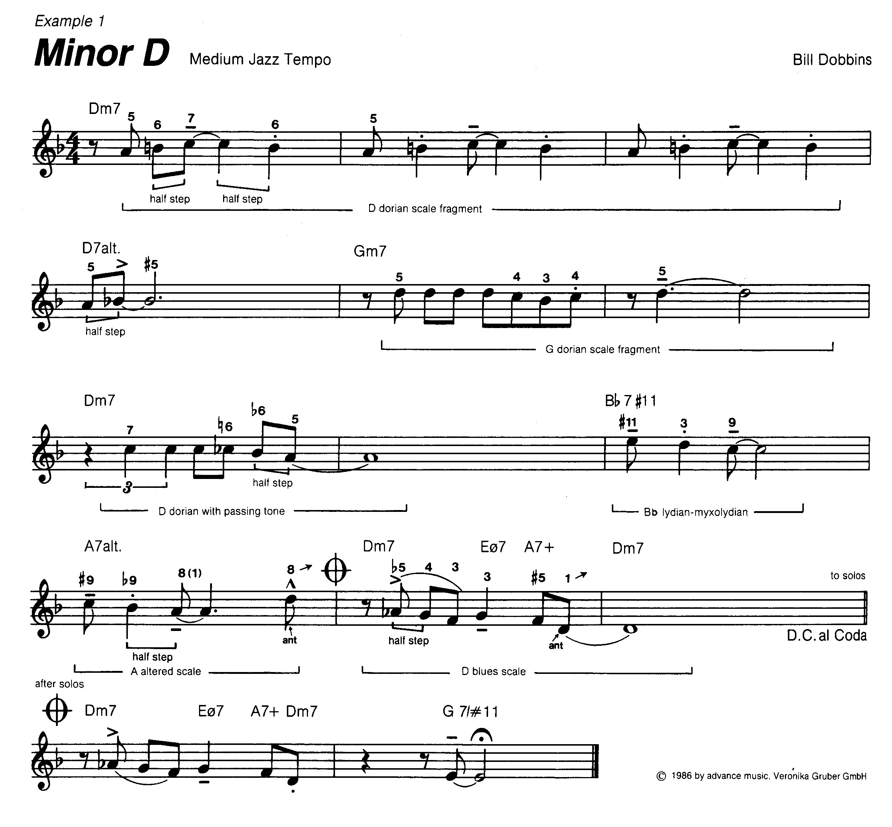
Example 2 includes five different harmonizations of Minor D. The first two harmonizations are in a fairly basic style similar to arrangers such as Neal Hefti and Sammy Nestico.
Version B uses stylistic devices associated with Duke Ellington and Billy Strayhorn.
Version C is in a style which is similar to the four-part writing of Oliver Nelson.
Version D is reminiscent of the work of Gil Evans during the 1960's. These different harmonizations clearly illustrate all of the basic harmonization technics as well as the linear approach.
Notice that the chord roots are often omitted from the voicings, since the roots are played by the string bass in the rhythm section. The rhythm section will be studied more thoroughly in Chapter Three.
The different versions of Minor D are arranged one below the other so that the harmonic variations may be easily compared. In each version the basic chord progression is shown above the melody (as in a normal lead sheet), the basic chords used in the melody harmonization are shown below the staff, and the specific chord tones used in each voicing are shown directly below each chord symbol. We will now look at each version in detail.
Measures 1 thru 3: the melody consists of a fragment of the D dorian scale between the notes a and c.
Version A uses the basic technic of diatonic parallelism.
All four voices move parallel in the scale of the chord (D dorian). The two basic chord tones in the melody (a and c) are harmonized with 1—3—5—7 and 3—5— 7— 9 voicings of the basic d minor chord. The passing tone (b♮ ) is harmonized with a 1—3—5—7 voicing of e minor, the diatonic neighbor chord in the D dorian scale.
Version A1 uses the technic of tonicization. The chord of the moment is treated as a temporary tonic chord. A progression is then constructed which arrives at this temporary tonic chord. In this case the most basic form of tonicization is used. The passing tone (b♮ ) is harmonized with a 3—5 — 7 —9 voicing of the dominant of Dm7 (the chord of the moment). This results in the progression Dm7 — A7 — Dm7.
Version B uses the basic technic of chromatic parallelism. When the melody moves by half-step (b♮ to c), 3—5— 7 —9 voicings of the chords C♯m7 — Dm7 are used for harmonization. Thus, all four voices move in a chromatically parallel manner. The descending passing tone, however, is harmonized diatonically as in version A.
Since the descending passing tone resolves by whole step, diatonic parallelism makes a more convincing harmonic progression. It also makes stronger lines in the second and fourth voices.
Version C harmonizes the whole step (a to b♮ ) by means of chromatic parallelism (3 — 5 — 7 -9 voicings of d minor to e minor). This creates two new sounds: minor second intervals in the inner voices and a harmonic cross-relation which results from the alternation of f♮ and f♯ in the key of d minor.
The third voice (e—f♯—f♮—f♯ etc.) would be awkward to play since it is not very melodic and is difficult to hear in relation to the tonality of d minor.
Although the colorful sound may justify the awkwardness, version D offers a better solution in open position.
Version D arranges the same pitches found in version C, but using a linear approach.
The second and fourth voices move more independently from the melody, but they are easy to hear and comfortable to play. Most importantly, the awkward third voice from version C now uses the note f♯ in a more melodic manner. This solution could be used in close position if the second and fourth voices crossed each other as shown below.
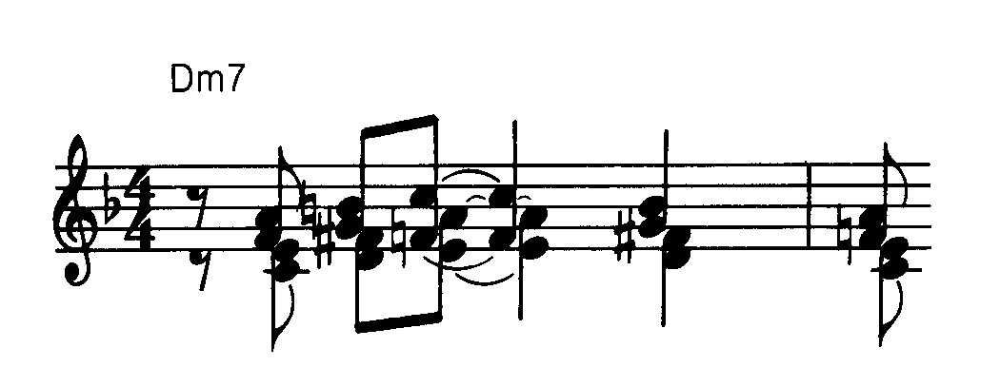
The version above would be effective if the aim is simply to make the individual lines more comfortable to play.If the aim is to draw attention to the lines themselves, however, then the open position solution in version D will be more effective. Solutions which are arrived at through a linear approach might never be discovered by writers who always think in terms of harmonic progressions and chord voicings. The linear approach is based on the idea that the strongest harmony is actually counterpoint, even if the individual lines move in rhythmic unison. In these first three measures of Minor D the notes a and c are basic chord tones in the chord of the moment (Dm7).
It is the passing tone b♮, then, which has the most possibilities in terms of different harmonizations.
As a general rule it is best to voice the basic chord tones of a melody first, especially those which occur on strong beats or are sustained for long durations. Next, the other notes should be harmonized using the basic technics as discussed above.
Measure 4: the melody approaches the augmented fifth of the D7 chord by half-step from below.
Version A uses the most obvious technic: chromatic parallelism. First the note b♭ is harmonized with an altered 3—5 7—9 voicing of D7.
All four voices, then, move chromatically parallel with the melody.
Version A1 uses the same technic with a different D7 voicing. Listen closely to the difference in the sound of the two D7 voicings.
It is extremely important to be aware of the subtle changes in sound created by the smallest harmonic alterations.
Version B uses the technic of tonicization (A7 is the dominant of D7).
Notice that the second and fourth voices move down stepwise while the first and third voices move up stepwise. Contrary motion can be used effectively to add emphasis to a particular phrase or melodic fragment.
Version C continues the Dm7 chord for the first eighth note of this measure. There is contrary motion in the third voice and a repeated note in the fourth voice. When harmonizing a melodic line which has moving eighth-notes, repeated notes should generally be avoided unless they occur in the melody as well.
It is often difficult for all the horn players to phrase together if some have repeated notes while others do not. There is no real problem in this measure, however, since there are only two eighth-notes and the tempo is not very fast.
Version D uses a purely linear approach. The first voicing has no real harmonic relationship to D7. It might be analyzed as an F♯ minor triad with the major seventh in the lowest voice, or as a Dmaj7 with a minor third in the lowest voice. In either case it is simply a passing sonority and has no harmonic function.
The second and third voices have chromatic passing tones which lead to the raised ninth and seventh of D7, while the fourth voice has a chromatic lower neighbor tone which returns to the third of D7. This linear solution sounds convincing for two reasons. First, the top three voices form a simple minor triad, which makes the dissonance in the fourth voice less harsh. Second, and most importantly, the dissonance is immediately resolved with smooth voice leading. This solution could only have been discovered through experimentation with voice leading possibilities.
It is a clear example of the linear approach. A slightly more conventional treatment of this measure is shown below.
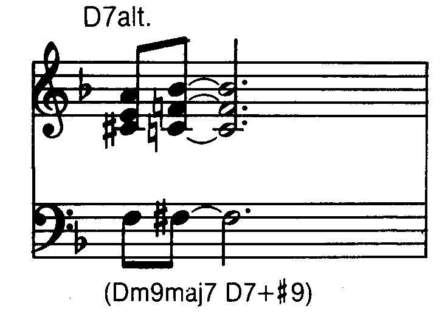
Measures 5 and 6: the melody consists of a fragment of the G dorian scale. I say G dorian since the raised sixth (e♮) is implied by the key of the music and there is no e♭ nearby in the melody.
Version A uses the most basic technic: diatonic parallelism.
Version A1 uses tonicization. F♯°7 is the diminished seventh chord which normally resolves to Gm7.
Version B uses a combination of tonicization and chromatic parallelism. The three voices under the melody form chromatically parallel diminished triads which lead to F♯°7. Thus, the melody note (d) is treated as a melodic pedal point. The F♯°7 resolves, as in version A1 , to G minor. In version B, however, Gm6 is used instead of Gm7. The use of minor sixth chords is common whenever the minor chord functions as a tonic chord. In Minor D both the D minor and G minor chords function as tonic chords. D minor is the tonic key of the tune and the G minor chord is prepared by a modulation to the key of G minor (D7alt. — Gm6). Minor chords which function as II chords in a II — V progression, however, must contain the seventh. Otherwise, they sound like a 3— 5— 7 — 9 voicing of the V chord.
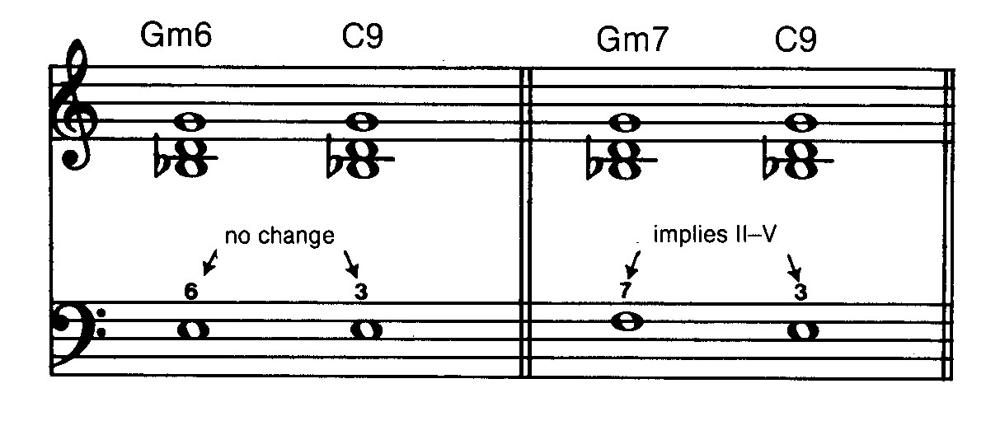
Version C uses chromatic parallelism to harmonize the whole step from d to c. The use of a half-step between the melody and the second voice, as on the fourth beat of measure 5, is extremely rare. The use of intervals which are smaller than a third between the melody and the second voice can easily interfere with the melody. In this case, however, the half-step is approached and left by contrary motion. By using a linear approach, the half-step does not interfere with the melody. Besides, the frequent use of half-step intervals in the chord voicings helps to give version C a unified sound. As in measures 1 thru 3, the chromatic line in the second voice (b♭—a♭—a♮—a♭—b♭) may be somewhat awkward to play. The crossing of the second and third voices, as shown below, will result in a more melodic line in the second voice.
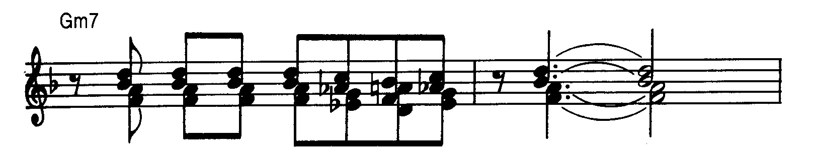
Version D adds the fourth to the G minor chord.
The fourth is sometimes a useful note for minor chords, since it adds harmonic color without changing the basic minor sonority. The exposed minor ninth intervals between the second and fourth voices in measures 1 thru 3 and between the melody and the fourth voice in measures 5 and 6 are rarely used in jazz. They sound most convincing in situations where the higher voices create more consonant sounds, such as the triads which occur in this piece. When used in this way, minor ninths add a strong and distinctive color without destroying the feeling of the basic chord quality or tonality.
Measures 7 and 8: the melody consists of a chromatic scale fragment between the seventh and fifth of the Dm7 chord.
Version A uses the most basic technics. Diatonic parallelism is used to harmonize the first two melody notes. Chromatic parallelism is used to harmonize the rest of the phrase.
Version A1 uses a combination of tonicization and chromatic parallelism. Eb 7, which has a tritone relationship to A7, is used as a substitute chord leading to D minor. This tritone substitution is the most commonly used substitution in jazz. The Eb7 chord is, then, approached chromatically from E7. Thus, instead of the basic progression E7 — A7 — Dmi we have E7 — Eb7 — Dmi. Again, a tonic minor voicing (Dm6,9) is used instead of Dm7.
Version B uses chromatic parallelism in a manner similar to measures 5 and 6. This helps to give version B a unified sound.
Version C uses chromatic parallelism.
Notice that the 3— 5— 7 — 9 voicing of Cm7 contains the same notes as Ebmaj7. This implies a variation of the tritone substitution for A7 (Eb maj7 -Dm7 instead of A7 — Dm7).
Version D uses chromatic parallelism, but there is more independent movement in the individual lines. The basic progression used is Dm7 — E7 — Eb7 — Dm7, but the contrary motion on the third and fourth beats of measure 7 adds musical interest. The voicing on the fourth beat of measure 7 is extremely rare. It contains no third, and the flatted ninth is on the bottom. It sounds convincing only because of the smooth voice leading. The movement of the fourth voice from f♯ to f♮ refers back to the earlier movement from f♮ to f♯ (measure 4).
Measure 9: the melody consists of a fragment of the Bb lydian-myxolydian scale.
Version A suggests another basic technic: the use of inversions of the same four-note voicing (3—7—9—♯11 is the same as 3—♭5—7—9 since ♯11 and ♭5 represent the same note). In this case, however, the second voicing was changed slightly to avoid an inappropriate whole-tone scale sonority. The use of inversions will be illustrated more fully in Chapter Five.
Version A1 uses tonicization, since the voice leading from B7 to Bb7 is not chromatically parallel. B7 is the tritone substitution for F7, the normal dominant of B♭.
Version B uses tonicization in a more extended manner, moving from C7 (the dominant of F) to F7 (the dominant of Bb) to Bb 7.
Version C uses chromatic parallelism.
Notice that the voicings, which contain only the upper extensions of the chords, also contain half-step intervals which are characteristic of this version.
Version D can only be explained in terms of a linear approach. The final voicing is approached by scale-tone triads in the upper three voices and by chromatic ascending movement in the lowest voice. Once again, the use of consonant sounds in the upper voices and smooth voice leading make this solution convincing. The opening sonority is a C triad with F♯ below, but this sound has no clear relationship to Bb 7. It only creates harmonic tension which is immediately resolved by the smooth voice leading in all four voices.
Measure 10: the melody consists of a fragment of the A altered scale.
Version A uses chromatic parallelism (Bb 7 — A7).
Version A1 also uses chromatic parallelism, but with different voicings of the Bb7 and A7 chords.
Version B uses tonicization (F 7 — Bb 7) and chromatic parallelism (Bb7 — A7).
Version C uses tonicization, since the voicings of Bb 7 and A7 are not chromatically parallel. Bb 7 is the tritone substitution for E7, the normal dominant of A7. The augmented triads in these voicings clearly imply the dominant chord function, even though the seventh is omitted.
Version D again uses triads in the upper voices and chromatic movement in the lowest voice. The Eb9 voicing (with the ♯11 in the melody) is another variation of the tritone substitution (Eb is the tritone of A, the normal dominant of D minor).
All five versions harmonize the final note in measure 10 with the chord of measure 11 : Dmi.
As a general rule, whenever the melody anticipates the sound of the next chord, this anticipation should be harmonized with a voicing of the next chord. This usually occurs when the melody anticipates the first or third beat just before a chord change.
Measures 11 and 12: the melody consists of a fragment of the D blues scale.
Version A uses chromatic parallelism to harmonize the first three eighth-notes.
Version A1 uses chromatic parallelism, but Dm6 is used instead of Dm7.
Version B uses chromatic parallelism (D°7 — C#°7) and tonicization (C#°7 — Dm6).
Notice the use of E+ in place of Eø7. When minor or half-diminished chords function as II in a II —V progression, they can be changed to dominant type chords if the melody permits it.
Version C uses chromatic parallelism, but harmonizes the first three eighth-notes with third inversion major seventh chords. This works well for three reasons. First, the third voicing (Bb maj7) contains the notes of the D minor triad (the chord of the moment). Second, Bb has a tritone relationship to the following chord (E+ ). Third, the voice leading is smooth. In fact, the second and fourth voicings (Cmaj7 and E+ ) both contain the root position C triad in the upper voices. The final voicing is a minor triad with an added ninth, another strong sound for tonic minor chords.
Version D uses a combination of chromatic parallelism (Fm7 — Em7) and the linear approach. In fact, I discovered the chromatic line in the lowest voice because I was trying to avoid a repetition of the note d on the third and fourth eighth-notes. It should be emphasized that the chord voicings used to harmonize a melody do not affect the piano and bass parts unless the basic chords of the tune are changed.
The piano and bass parts for any of the five versions of Minor D might use only the basic chords shown above the melody with only a few small changes or additions, depending on the particular version to be used. Piano and bass parts will be discussed more thoroughly in Chapter Three.
Although there is much information in these five versions of Minor D, there are many more possible harmonizations in four voices. A more advanced linear version will be included in Chapter Five. The five versions could be orchestrated for many different combinations of instruments. The close position versions would work best with four brass or four saxophones (1 alto, 2 tenors, 1 baritone). By dropping the second voice down one octave, the close position versions can be changed to open position. In open position many different mixed orchestrations would be possible (trumpet, alto sax, tenor sax, baritone sax; trumpet, tenor sax, trombone, baritone sax; clarinet, flugelhorn, alto sax, trombone; etc.).
Although the following chapters will include mostly practical instrumentation, the student should freely experiment with whatever instrumentation is most easily available for rehearsal purposes. The advantage of a linear approach is that, when each voice in the music has a good line, any orchestration will work as long as each line is within the normal range of the instrument to which it is assigned. The truth of this idea is clearly proven in the contrapuntal music of Bach.
Listening to the cassette tape of the examples from this book will be helpful in order to become familiar with the different sounds of open and close position, the different harmonic possibilities obtained through the different harmonization technics, and the subtle differences in texture produced by changes of orchestration. The education of the ear is the most important process of all, since it is the ear which must make the final choices.
I have used Minor D to illustrate the basic technics and the linear approach because it is a simple melody with few notes. Simple melodies with few notes have the most possibilities for harmonic and linear variation and development. Bartok came to the same conclusion while studying and transcribing Hungarian folk melodies. Simple melodies are ideal for jazz because they allow the performer to add a personal touch to every note.
It is also useful, of course, to have the technic necessary to harmonize a more technically complex melody. The various treatments of Blues for Barry in the following chapters will clearly illustrate how to deal with more notes at a faster tempo. Now that the basic technics and the linear approach have been thoroughly studied in a four-voice texture, we will study the possible treatments of Minor D and Blues for Barry in relation to two, three, four and five horns. Both traditional and linear approaches will be illustrated.
Although reduced concert scores are used throughout this book in order to facilitate study, excerpts of a full transposed score will be included in the appendixes for the study of transposition and score layout.
Any melody can be arranged in one of three basic styles: harmonization, homophony and counterpoint. In harmonization each note is harmonized or »voiced« by adding one or more notes below it. The number of notes added depends on the desired number of voices or on the number of available instruments. In homophony the melody is stated as a single line with a harmonic accompaniment. The accompaniment usually consists of chord voicings which are combined with appropriate accompanimental rhythms. The accompaniment may be entirely notated, but it is often improvised by the rhythm section. In counterpoint one or more independent lines are added, usually below the melody. Unlike the voicing lines of harmonization, these lines are rhythmically independent from the original melody. In this chapter harmonization and counterpoint for two horns will be studied. The homophonic style will be discussed more thoroughly in Chapter Three. Harmonizing a melody for two horns can be more difficult than harmonizing the same melody for four horns. With only two horns it is very important to write a second part which, when combined with the original melody and bass line, clearly implies the basic harmonic progression of the piece. Thirds are usually the strongest intervals to use with two horns. They usually sound more full than fourths and more consonant than seconds. This always depends, of course, on the original melody. Fourths and seconds can be used effectively in an appropriate context.
Example 3 is a harmonization of Minor D for two horns. The harmonization uses only diatonic and chromatic parallelism, and the second voice is usually a third below the original melody. The two lines, when combined with the chord roots, clearly imply the basic harmonic progression.
If fourth intervals were used instead of thirds, the basic chord qualities would be less clear. Parallel fourths would also result in several tritone intervals. The tritone interval is not very effective in writing for two horns, unless the tritone consists of the third and seventh of a dominant or diminished seventh chord.
The fourth intervals at the end of measures 10 and 11 were used because they give the second voice a good line while emphasizing a basic chord tone. A third interval in these places would give the second voice the note b♮ . The notes d and b♮ do not imply a D minor chord as strongly as the notes d and a. The notes d and f imply a D minor chord more strongly than the notes d and a, but this change gives the second voice a more awkward line.
Measures 9 and 10 could be harmonized with sixth intervals, so that the second voice would have the third of the A7 chord (c#). This change, however, makes a less colorful sound in measure 9.
There are always choices between many possible harmonizations. These choices always depend on the notes in the original melody. In some cases important melody notes may not consist of the third, seventh or sixth of the chord of the moment. In these cases the second voice should use whichever of these notes creates the strongest sound when combined with the melody note and the chord root. The final voicing in the coda of Minor D is a good example. The melody note is the thirteenth of G7. The seventh makes a stronger sound than the third when it is combined with the melody note and the chord root. These three notes (e, f and g) are able to imply a fairly complex chord (G13).
Example 4 is a harmonization of Minor D which uses a linear approach.
The second voice is more melodically independent.
The following aspects of the second voice should be studied carefully.
Measures 1 thru 4: the chromatic line emphasizes the fourth or suspension of Dm7, which resolves to the third of D7 in measure 4.
Measures 5 and 6: the second voice decorates the root and third of Gm7.
Measures 7 and 8: the second voice emphasizes the resolution of the fourth to the third of Dm7. The resolution is ornamented by chromatic movement to the third.
Measures 9 and 10: the chromatic movement adds rich color between the melody and the chord roots.
Measures 11 and 12: contrary motion leading to a unison makes an effective ending.
Coda: the descending chromatic line prepares the final voicing.
Notice the frequent use of contrary and oblique motion. The chromatic preparation of the final voicing in the coda makes the note b♮ effective in the second voice. Without this chromatic preparation the note f sounds better, as in example
3. The melodic independence of the second line, then, creates more possibilities. Listen carefully to the difference between example 4 and example 3.
Example 5 is a contrapuntal arrangement of Minor D.
There are two basic approaches to writing two-part counterpoint in a jazz idiom. In the first approach, the second voice may be written for the string bass. In this case the line of the second voice should include the chord roots, especially when they are not contained in the original melody. In the second approach, the two lines are played by two horns over a walking bass line. In this case there are actually three lines. Minor D uses the first approach.
The second approach will be studied later in this chapter (see example 9).
Although the bass line of example 5 follows the rhythm of the melody, it also makes comments during the long notes in the melody (measures 4, 6, 8 and 12).
The following aspects of the bass line should be studied carefully.
Measure 4: the use of the tritone (a♭).
Measures 6 and 7: the chromatic movement creates tension which is resolved at the end of measure 7.
Measure 8: the use of the D blues scale.
Measures 9 and 10: the use of contrary motion and the use of the tritone in measure 10.
Measure 11: the g♯ on the third beat implies a substitute chord, either G#°7 or E7#9. Either chord resolves normally to A7.
Measure 12: the b♭ creates a kind of suspension which resolves on the second beat. The D blues scale is used at the end of this measure.
Coda: the arpeggio d — f —a in the melody helps to imply a G9 chord at the end of the piece. In a more elaborate arrangement the contrapuntal version in example 5 might be played by two horns in unison (or octave unison) and bass. The melody could then be repeated with the harmonization from either Example 3 or Example 4.
Blues for Barry (dedicated to Barry Harris) is a more complex melody in the bebop style. The analysis in
Example 6 illustrates the use of nonharmonic tones.
The following abbreviations are used. p.t. — passing tone: a note which moves stepwise from one chord tone to another. n.t. — neighbor tone: a note which is a step above or below the same adjacent chord tone (measure 2: g —a —g). app. — appoggiatura: a dissonance which is approached by a leap and resolved stepwise in the opposite direction (measure 4: e♭ — d — c). e.t. — escape tone: a dissonance which is approached by step and resolved by a leap in the opposite direction (measure 4: g— a — f). emb. —embellishement of a basic chord tone (measure 5: a—b♭—b—c—a—b♭ embellishes the root of Bb maj7). ant. — anticipation: a note which rhythmically anticipates a chord change. The note actually implies the sound of the new chord.
It is very important to recognize the difference between basic chord tones (root, third, fifth, seventh) and the various types of nonharmonic tones. This knowledge will be especially useful for harmonizing a complex melody for more than two horns.
Example 7 is a basic harmonization of Blues for Barry for two horns.
In general, only diatonic and chromatic parallelism have been used. Third intervals are used throughout, except for measures 10 thru 12.
The fourth intervals in these measures are only used in order to give the second voice the third of the chord. The choice of notes in the second voice, then, should always result in a sound which clearly implies the chord of the moment.
From the two basic harmonizations which have been studied (Examples 3 and 7) some general rules can be formulated. These general rules apply specifically to writing for two horns. 1 . Harmonize the most important notes of the melody first, including basic chord tones, the highest and lowest notes of each phrase, the first and last notes of each phrase, and long notes. Harmonize these notes with the interval which most clearly conveys the sound of the chord.
If the melody does not contain the third or the seventh of the chord, these notes should be considered first.
2. Complete the second voice by moving diatonically or chromatically parallel with the melody (diatonic when the melody is diatonic, chromatic when it is chromatic).
3. Make small changes or adjustments in the second voice, if these changes result in a less awkward or more melodic line.
Example 8 is a harmonization of Blues for Barry which uses a linear approach to writing for two horns.
The following aspects of the second voice should be studied carefully.
Measures 2 and 3: the ascending chromatic line leads to a minor second interval which contains the third and ninth of Dm7. This dissonance emphasizes the 3/4 cross-rhythm in these two measures as well as the long space before the next phrase. Second intervals also tend to sound humorous in a context where consonant intervals are more predominant. Humor is an important element in all arts, but the humor should always be intentional. Gerry Mulligan's compositions on his numerous quartet recordings use humor very effectively in a variety of different two horn combinations.
Measure 4: the contrary motion is an effective contrast to the parallel sixth intervals in measure 5.
Measures 5 thru 8: the chromatically ascending and descending lines always lead to consonant intervals which clearly imply the chord of the moment.
Measures 9 and 10: the contrary motion in measure 9 leads to a minor second interval on the downbeat of measure 10. The minor second, which contains the third and ninth of Gm7, is then resolved by contrary motion. The major second interval in measure 10 is also resolved by contrary motion.
Measures 11 and 12: the major second interval at the end of measure 11 is resolved by contrary motion at the beginning of measure 12.
From the two linear harmonizations which have been studied (Examples 4 and 8) some general rules can be formulated. These general rules apply specifically to writing for two horns.
1. Harmonize the most important notes of the melody first.
2. Look for areas where the second voice can move from one of these important notes to the next by means of contrary motion.
3. Try to emphasize basic chord tones in the second voice which are not contained in the melody.
4. Make small changes and adjustments until there is a balanced mixture of similar and contrary motion.
5. Be sure that the two voices, when played above the chord roots, clearly imply the harmonic progression.
Example 9 is a contrapuntal arrangement of Blues for Barry.
Since the two lines are to be played over a walking bass line, the second line rarely contains the chord roots.
The following aspects of the second voice should be studied carefully.
Measures 2 and 3: the chromatic line (c—c♯—d) is made possible by using the note c (implying a first inversion C chord) instead of the note d (the seventh of Eø7). This chromatic line is combined with a simplified version of the 3/4 cross-rhythm in the top voice. The G7 chord is stated with a simple arpeggio in measure 3.
Measure 4: the seventh of Cm7 begins a chromatic embellishment of the third of F7.
Measure 5: the long rest creates suspense before the new entrance at the end of the measure.
Measure 6: the fifth of Eb7 begins a chromatic embellishment of the root of Am7.
Measure 7: the seventh of Am7 begins an embellishment of the third of D7.
Measure 8: the seventh of Abm7 begins an embellishment of the third of Db 7.
Measure 10: the f♯ begins a chromatic embellishment of the third of C7.
From the two contrapuntal arrangements which have been studied (Examples 5 and 9) some general rules can be formulated. These rules apply specifically to contrapuntal writing for two horns. 1 . Try to make the second line rhythmically active during rests or long notes in the first line, and vice versa.
2.
If the second line is to be played by the string bass, it should emphasize the chord roots in the harmonic progression, especially when the roots are not contained in the first line.
3.
If the two lines are to be played by two horns over a walking bass line, the second line should emphasize basic chord tones which are not in the first line (especially thirds, sevenths and fifths).
4. Study the characteristics of the basic nonharmonic tones as used in Examples 5 thru 9.
All types of nonharmonic tones can be used effectively to decorate contrapuntal lines after the basic shape and important notes have been determined.
All the examples in this chapter should be carefully analyzed in relation to specific chord tones, nonharmonic tones, motivic development and the use of dissonance and resolution. The examples on the cassette tape should be listened to repeatedly, in order to develop aural sensitivity and aural memory. The discography given below should be useful for further listening in relation to writing for two horns. The student should transcribe the two horn lines from several selections on these recordings. The transcriptions should be analyzed for further study and application of the various technics of harmonization or counterpoint.
Discography — original page 34
A good rhythm section is essential for a convincing jazz performance.
Since much of the rhythm section accompaniment is improvised, each member of the rhythm section must know the history and tradition of their instrument. A good rhythm section can make a very effective accompaniment with very little specific notation. A poor rhythm section, on the other hand, will not be helped by the careful notation of every piano voicing and cymbal stroke. The composer or arranger should give the rhythm section just enough information to focus their innate creativity. Before studying the rhythm section as a unit, we will discuss each individual rhythm section instrument.
The bass is the foundation of the rhythm section.
Although the electric bass functions well in modern fusion styles, the string bass is essential for an authentic jazz sound.
There are two kinds of notation for the bass which are common in jazz composing and arranging. The first kind is no different from conventional notation.
The bass is played pizzicato in jazz, unless the indication arco (with the bow) is given. In jazz the bass is seldom bowed, except in rubato sections and in occasional bass solos.
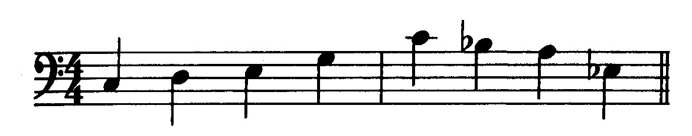
A strictly notated bass line, such as the one shown above, is only used when the composer or arranger wants a particular bass line to accompany a melody or harmonized passage. Strict notation is also used when the bass plays in rhythmic unison with other instruments and in written solo or unison passages.
The second kind of notation for the bass consists of chord symbols and slanted lines. Each slanted line represents one beat, so that these lines indicate the number of beats each chord is to be played.
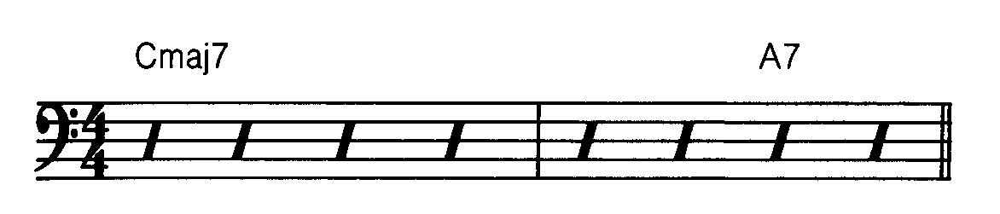
In the example above, the bass would play a line of quarter notes which outlines Cmaj7 for six beats and A7 for two beats.The bass normally plays the chord root on the first beat of a chord change and roots, thirds or fifths on the strong beats of each measure (beats one and three in 4/4). Notes above the fifth of a chord and nonharmonic tones are rarely played except as passing tones on weak beats. For this reason the chord symbols in the bass part do not need to show extensions or altered tones unless the fifth is altered (♭5 or +). In a jazz context the bass usually plays quarter notes unless one of the following indications is given. 1. 2-beat feel: the bass plays mostly half notes on beats one and three, with occasional decoration.
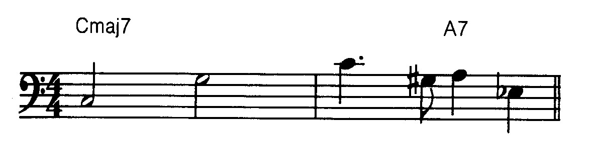
2. Double time feel: the bass plays occasional decorations of the quarter notes while the drums play or imply a tempo which is twice as fast as the original tempo.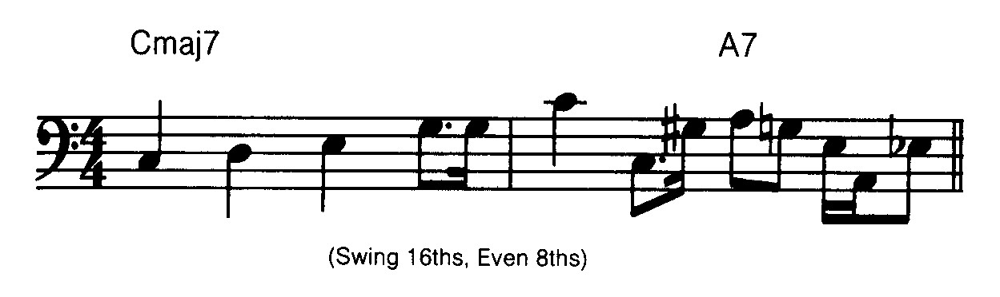
3. Open feel: the bass plays irregular durations or cross-rhythms which stretch across the bar lines in an unpredictable manner. The harmonic progression is still followed by playing roots on or near each change of chord.
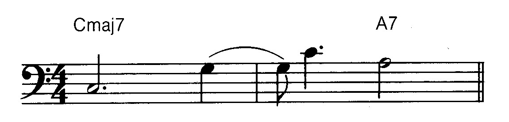
In non-jazz styles, as in rock and latin music, the bass usually has specific rhythms or rhythmic roles which characterize each particular style. A study of all these styles is far beyond the scope of this book.
In general, if the bass part contains the style and tempo of the piece (Medium Fast Bebop, for example) and clear correct chord symbols, there should be no problem. The arrangements of Minor D and Blues for Barry, to be studied later, will illustrate appropriate ways of using the bass in relation to the horns and the rest of the rhythm section.
There are four kinds of notation for the piano which are commonly used in jazz composing and arranging. The first kind is just like conventional notation.
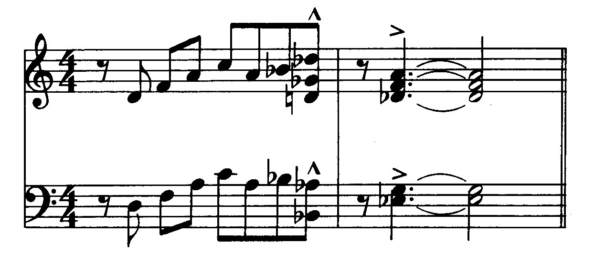
Such specific notation is used for written piano solos or melodies. It can also be used when the composer or arranger wants specific chord voicings or a particular accompaniment.
The second kind of piano notation consists of chord symbols. In this case the pianist will improvise an accompaniment which consists of voicings of the chords combined with appropriate rhythms.
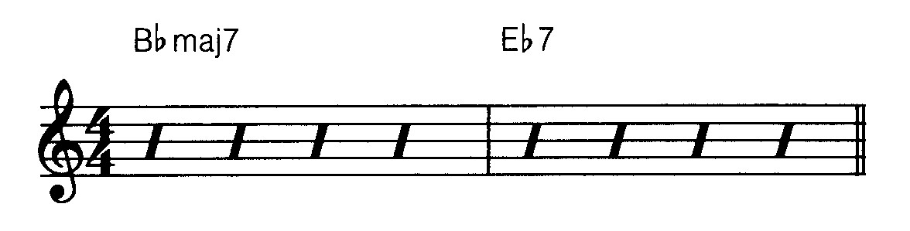
The third kind of piano notation includes chord symbols and rhythms. In this case the pianist will play voicings of the chords while using the notated rhythms.
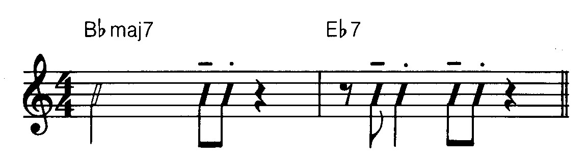
The fourth kind of piano notation includes chord symbols, rhythms and the top note of each chord voicing. In this case the pianist will voice the chords with the given notes on top.
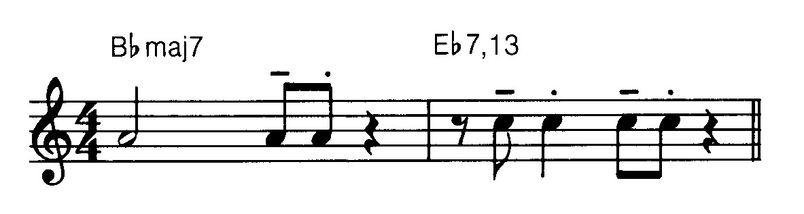
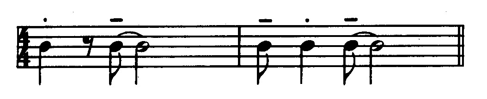
If 2-beat feel, double time feel or open feel are indicated in the bass part, they should be indicated in the piano part as well. The pianist usually plays more sparsely in a 2-beat or double time feel than in a basic »straight ahead« 4/4 feel. In an open feel the chord voicings will be stated with irregular rhythms or cross-rhythms.
The guitar and vibes function just like the piano when there is only one harmony instrument in the rhythm section. When two or more harmony instruments are used in a jazz context, the piano is normally the main accompanimental instrument.
The guitar and vibes normally function as part of the horn section. The vibes often doubles the lead horn while the guitar sometimes doubles the lead horn and the vibes one octave lower. In arrangements for two horns the vibes often doubles the lead horn while the guitar doubles the second horn.
The piano usually accompanies the horn solos, unless the guitar plays in a »rhythm guitar« style, playing choked chord voicings on all four beats in a traditional swing arrangement. Of course, guitar or vibes may accompany the solos if the arranger wants this particular orchestration.
There are several kinds of notation for the drums, although specific notation is rare. The drums are such a complex instrument that even the best jazz composers and arrangers write only a sketch for the drum part. In a »straight ahead« style the standard swing cymbal rhythm is often given at the beginning of a piece, although this is not absolutely necessary.
Notice that the swing eighth notes are represented by ordinary eighth notes rather than triplets.
If the tempo indication says »jazz«, »swing«, »shuffle«, »groove« or »bebop« the musicians will play the eighth notes as swing eighth notes unless indicated otherwise.
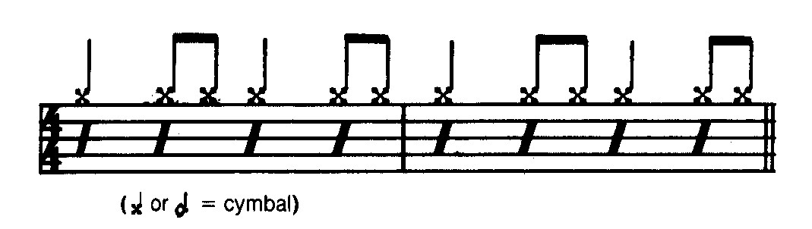
If the drumer is to play certain rhythms with the horn section or pianist, the rhythms must be written in the drum part.
If the drummer is to continue playing the time as well as the ensemble rhythms, then the rhythms should be written on top of the staff.
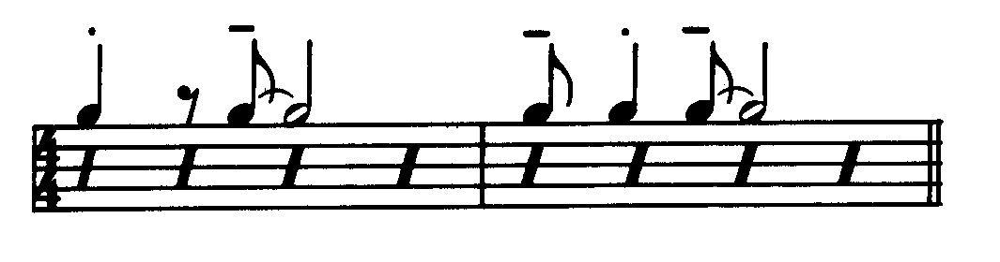
If the drummer is to play only the ensemble rhythms, the following notation may be used.
If 2-beat feel, double time feel or open feel are indicated in the bass part, they should be indicated in the drum part as well. The groups led by Ahmad Jamal and Miles Davis during the late 1950's and early 1960's are the best models for playing in a 2-beat or double time feel. The Bill Evans trios and Miles Davis' quintet of the mid 1960's are the best models for playing with an open feel. Most important groups of the 1970's and 1980's were influenced by these rhythm sections.
There are a few specific drum notations which are common in certain styles. They should only be used, however, if they are clearly appropriate to the style of the piece.
The following hi-hat beat (played with sticks or brushes) is sometimes used to create an authentic swing style.
It is associated with Count Basie's rhythm section.
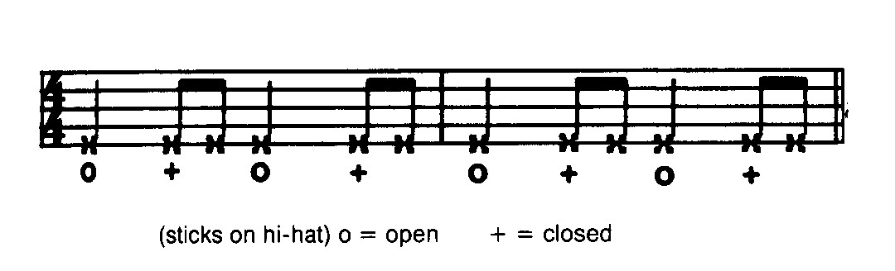
Sometimes a rim shot or »clock beat« is played on the fourth beat in pieces with a strong swing style groove. Sam Woodyard often used this effect with Duke Ellington's band during the 1950's.
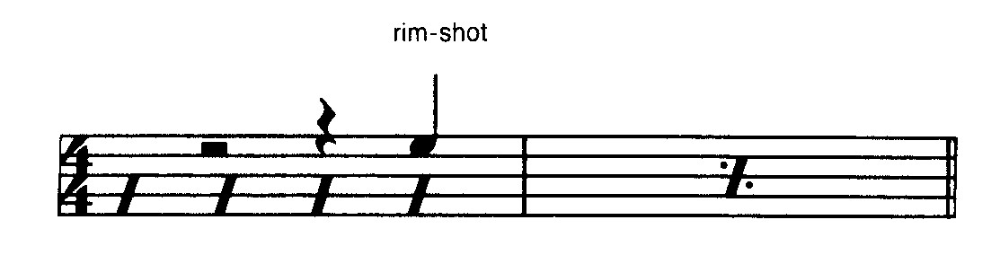
As the student listens more carefully to the classic recordings of jazz, he or she will become familiar with more specific ways in which to use the instruments of the rhythm section. The beginning arranger, however, should try to write rhythm section parts which are basic but clear.The following versions of Minor D and Blues for Barry will illustrate some basic but effective ways of using the rhythm section in an arrangement.
Example 10 is a version of Minor D which uses the rhythm section in a basic accompanimental manner. The two horns are voiced mostly in parallel tenth intervals, which is very effective for trumpet and tenor sax.
The following aspects of the rhythm section parts should be noted.
Piano: in general, only chord symbols are given. The most important rhythmic highlights of the horn parts are indicated (measures 4 thru 7 and measure 10). When the piano plays these rhythms, there will be a stronger ensemble feeling, even though most of the part is improvised.
Bass: the chord symbols are more basic than those in the piano part, but all altered fifths are clearly indicated.
The bass does not play the anticipations in measures 4 thru 7 and measure 10.
Such anticipations are often more effective when the bass plays on the beat. This creates a slight rhythmic tension which is usually released at the beginning of the next phrase.
Notice that the embellishing chords in measures 5 and 7 of the piano part are not included in the bass part.
In general, the bass part does not need to include embellishing or passing chords unless they are played for more than one beat. When Duke Ellington was asked how much information he put in his bass parts, he is said to have answered, »As little as possible«.
The bass parts in the scores in Chapter Seven contain all essential information.
Drums: the drums emphasize only two rhythms (measures 4 and 10). They play »fills« to connect the end of each four bar phrase with the beginning of the next. This is especially effective since the horns are not active during these measures.
If the drummer has good time, a basic but clear part is all that is necessary.
Example 11 is a version of Minor D which begins in a simple homophonic style. A faster tempo is used and the piece is played with a shuffle beat. In this homophonic style the trumpet states the melody while the tenor sax is part of the rhythm section accompaniment. The opening four measure vamp extends the form from twelve to sixteen measures. The change from the shuffle beat to straight ahead jazz time in measure 9 is an effective way of using tension and release within the formal structure of the piece. In measure 9 the tenor sax joins the trumpet for the rest of the theme.
The following aspects of the individual rhythm section parts should be noted.
Piano: the voicings are sometimes fully notated in order to give the arrangement a particular harmonic sound. The left hand doubles the bass line to emphasize the shuffle feel. The notated rhythms in measures 13 and 14 paraphrase the rhythms of the horns (for emphasis). The voicings in measures 14 and 15 are fully notated in order to create an unified sound with the horn voicings and bass line.
Bass: The written bass line conveys the shuffle feel. Again, the bass plays on the beats during the anticipations in measures 9, 13 and 14. The written bass line in measures 15 and 16 makes a deceptive resolution from A7 to Bb6,9, which resolves to Dm7 on the second beat of measure 16.
Drums: The shuffle beat usually consists of two basic elements. First, the ride cymbal is played with continuous swing eighth notes.
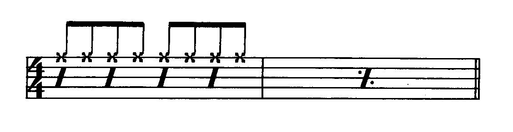
Second, beats 2 and 4 are played more heavily. The drums play the anticipations with the piano in measure 8 in order to build tension just before the change to straight ahead time in measure9. The drum fill in measure 12 prepares the rhythms in measures 13 and 14. The accent with the piano and bass on the fourth beat of measure 16 prepares the return to the shuffle beat.
Because of the change in rhythmic styles and the frequent ensemble rhythms, this version sounds more arranged than Example 10. Vibes and guitar could be added in two different ways. First, the vibes could double the trumpet line while the guitar doubles the tenor sax line. Second, the vibes and guitar could become part of the rhythm section accompaniment, since the original accompaniment has several parts which are fixed rather than improvised.
Editorial note: The original says measures 14 and 15. The fully notated voicings are in measures 15 and 16; the French edition uses the corrected reference.
Example 12 illustrates how to use the vibes and guitar in the shuffle version of Minor D.
The guitar is given the chord symbols and rhythm of the piano part.
In general, a composer or arranger who does not play the guitar should not attempt to write out specific guitar voicings
Since the guitar has fewer possibilities for voicing chords than the piano, only chord symbols or single note lines should be used until the writer becomes familiar with the guitar fingerboard. The vibes usually doubles the two highest notes of the piano voicings.
In general, it is not a good idea to write three or four note voicings for the vibes unless the tempo is slow and the player is comfortable with three or four mallets.
Since the vibes and guitar make a large rhythm section, the tenor sax plays with the trumpet throughout the piece. Otherwise, the rhythm section would overpower the melody.
Notice that the vibes and guitar do not play in measures 9 thru 12 (the beginning of the straight ahead time). This four measure rest makes their next entrance in measure 13 very effective, changing the orchestration.
Example 13 illustrates a basic rhythm section accompaniment to the first four measures of Blues for Barry. The rhythm section mainly comps and plays time, although the rhythmic response to the melody in measure 3 is dramatically effective. The tenor sax plays in octave unison with the trumpet, creating a simple homophonic style.
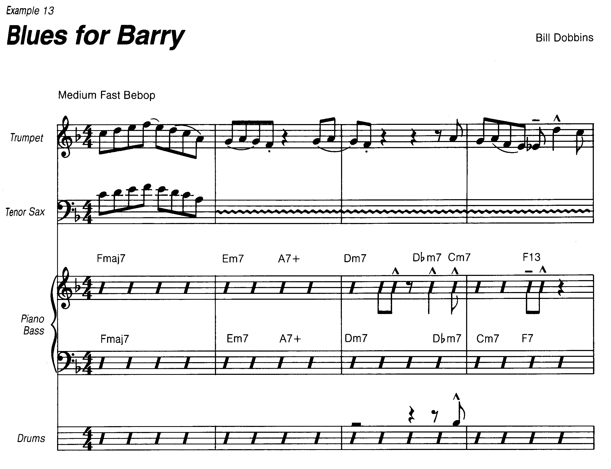
Example 14 is a more elaborate arrangement of Blues for Barry. The first four measures use a »stop time« effect. The tenor sax plays with the rhythm section, using a simple guide tone line which emphasizes the important notes of the harmonic progression. The tenor sax joins the trumpet when the rhythm section begins to play time in measure 5. This arrangement is still simple and homophonic, but it uses the rhythm section to give the piece a more colorful and vibrant personality.
Notice that the drums do not play the rhythms with the piano in measures 5 thru
8. The drums and piano are an important team in the small jazz group. However, if the drums emphasize every fixed rhythm in the accompaniment, they can easily interfere with the melody and the feeling of the time.
Example 15 illustrates specific piano voicings in the first four measures of Blues for Barry. Specific voicings may be written in the piano part if they compliment the horn voicings and the bass line. However, if there is any doubt as to which specific voicings to use, chord symbols and rhythms are perfectly adequate.
Every aspiring jazz composer and arranger should attempt to become more and more familiar with each rhythm section instrument and their relationships to one another. Carefull listening to the recordings listed in this book will be of great help in this regard. When there is a deeper knowledge of the vocabulary of each instrument, more details can be written into the parts. When there is a deeper understanding of the interaction between the rhythm section and the horns, this conversational dimension can become a part of the arrangement.
It is also helpful to get to know rhythm section players and their attitudes toward written arrangements. This can be very helpful in determining how much to write and how much to leave for the player to interpret. More attention will be given to the rhythm section in Chapter Seven. For now, we will return to the horn section to study writing for three, four and five horns.
Discography — original page 49
Writing for three horns is, perhaps, the most challenging of all writing skills. Three voices are enough to clearly imply most chords, but not enough to state every important note. The choice of notes, therefore, is very important.
In general, the third and seventh are the notes which convey the particular quality of a chord. In tonic chords (major or minor) the sixth may be substituted for the seventh. In chords with altered fifths, the fifth is also important.
Since the root is normally played by the bass, it can be omitted from the horn voicings.
Since the natural fifth sounds strongly in the overtone series, it may also be omitted in all chords with natural fifths (major, minor and, sometimes, dominant).
There are three types of horn voicings which are very useful in writing for three horns. The first, and most common, is the basic tertian triad.
It is used in all inversions, and in open and close position.
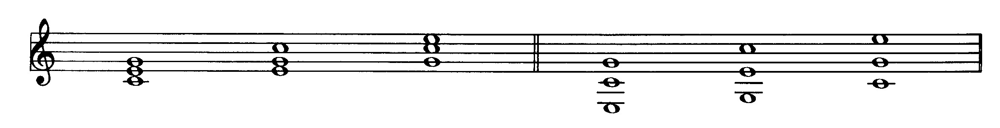
The second useful voicing is the quartal triad, which is also used in all inversions. Open position is more rare because of the extremely wide intervals.
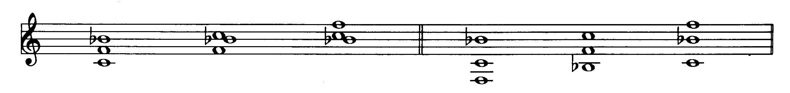
The third common voicing consists of a third and a second interval under the melody note. We will call this a »cluster voicing«, even though there is a third between the melody and the second voice. Inversions and open position are used less often, but are effective from time to time.
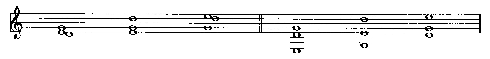
Cluster voicings which contain only second intervals, or those in which there is a second between the melody and the second voice, are extremely rare. They are sometimes used for a humorous effect. Some of the inversions of these voicings, however, are effective from time to time.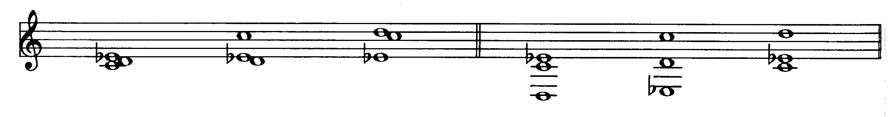
Example 16 is a basic harmonization for three horns of Minor D. The harmonization consists mostly of triads.
The following aspects of the harmonization should be noted.
Measures 4, 10 and 11 : the quartal voicings are effective for contrast.
Measure 8: because of the smooth voice leading in measure 7, this cluster voicing is very effective for contrast.
Measures 8 and 12: tonic minor voicings are substituted for Dm7.
Measures 9 and 10: The augmented triads convey a strong dominant feeling, even though there is no third in the Bb 7 voicing and no seventh in the A7 voicing.
Coda: the seventh of Dm7 prepares the third of G13.
In all the different harmonizations of Minor D and Blues for Barry the original chords will be shown above the staff.
There are two reasons for doing this. First, when a jazz arranger or keyboard player sees a tune in sheet music or in a »fake book", the chord symbols are fairly basic. The arranger or keyboard player must add extensions and altered tones.
Sometimes they change the chord qualities or use substitute chords.
All changes are made, however, in relation to the original chords. Second, by seeing the original chords above the staff, the student will be able to analyze any harmonic variations in relation to the original chords.
Example 17 is a harmonization of Minor D which uses cluster voicings. The half-steps between the third and ninth of the D minor and G minor voicings are colorful and effective dissonances. They are characteristic of the music of Horace Silver, Oliver Nelson, Gil Evans and many other important jazz writers.
Example 16 is more similar to the three horn arrangements of Art Blakey's Jazz Messengers group.
The following aspects of the harmonization should be noted. Tonic minor voicings are substituted throughout the arrangement for Dm7 and Gm7.
Measure 4: there is no seventh in the voicing of d7alt.
Since the cluster voicing implies a dominant sound and continues the established musical context, it works well. The voicing is from the D altered scale, which conveys the sound of an altered dominant chord.
Measures 9 and 10: the triads are effective for contrast.
Although the pianist in the rhythm section would play the missing thirds and sevenths, the triads sound quite full when played above the chord roots. The tritone (e♭) is used in the middle of measure 10 so that the bass does not double the melody. At the end of measure 10, the D minor voicing is an inversion of a cluster voicing which contains only second intervals (d — e — f).
Measure 11 : notice the voice leading.
The second and third voices approach the third beat by half-step, moving independently from the melody. This implies a linear approach, rather than the more basic technics.
Example 18 is a harmonization of Minor D which uses a linear approach.
The following aspects of the harmonization should be noted.
Measures 1 thru 3: each voice moves independently. The melody moves diatonically, the third voice moves chromatically, and the middle voice has an independent melodic line. The opening Dsus. voicing leads to a 7— 3—9 voicing of Dm7.
The second voicing, which is actually an Ab minor triad, is only a passing sonority.
Measure 4:
The second and third voices approach the D7alt voicing in contrary motion to the melody. The first voicing implies a passing Dmaj7.
Although it could also imply A13 (the dominant of Dm7), it sounds much more interesting with d in the bass. The D7alt. voicing is a quartal triad which consists of the augmented fifth, augmented ninth and seventh.
The piano would play a voicing which contains the third.
In general, if the horn voicing has a full sound and implies the quality of the chord, the piano can fill in the third or the seventh.
Since there is much linear activity in the horn lines, the piano should play only during the long notes, in response to the horns.
Measures 5 and 6: the second and third voices move in parallel fourth intervals. The first voicing is a neutral sound which contains the fifth, ninth and sixth of the G minor chord. The chromatic movement in the second and third voices leads to a clear Gm7 voicing on the third beat of measure 5 and at the end of the phrase in measure 6.
Measures 7 and 8: again, the second and third voices move in parallel fourths. The first voicing in measure 7 resolves to the seventh, fifth and ninth of Dm7. On the third and fourth beats of measure 7, chromatically parallel major triads resolve to a tonic D minor voicing. The triad on the fourth beat consists of the third, fifth and seventh of Ebm7.
The third voice, however, resolves up to the ninth of D minor, in order to have a more dramatic melodic line.
Measure 9: each voice moves independently.
The second voicing implies F13♭9, resolving to B♭13.
Measure 10: the quartal voicing at the end of the measure contains no third. It sounds appropriate, however, because of the quartal voicings in measures 4, 5 and 9.
Measure 11 the second and third voices move in parallel tritones. This implies the progression G7 — Gb7 — F7 — E7 — A7.
It is more subtle and effective, however, if the bass simply plays from Dm7 to E7 on the third beat.
Measure 12: the bass line from
Example 5 is very effective here.
Coda: an extra note has been added on the second beat of the second measure in order to emphasize the linear approach. The middle voice moves in contrary motion to the other two.
Notice that the second and third voices always have one of two important characteristics. Either they move by step or they have a tuneful line. Smooth voice leading and good lines, then, are the essential elements of a convincing linear harmonic approach. Of course, the main goal is simply to write something which sounds good.
The piano part for Example 18 might contain most of the harmonic alterations as a guideline, although the accompaniment should be fairly sparse.
The bass part, however, might contain only the original chords, except as noted in measures 11 and 12.
Since the melody of Minor D is so simple, it is probably not a good idea to divide the horns in a manner similar to Example 11 . The voicings in Example 16 work very well with the shuffle arrangement.
Example 19 is a homophonic arrangement of Blues for Barry.
The second and third voices have basic guide tone lines which contain important chord tones. The accompaniment is similar to the left hand accompaniment of a bebop pianist. This arrangement would sound good with or without piano.
If piano is used, it should state the chords in rhythmic unison with the horn accompaniment. The tritone substitution is used in measures 2, 3 and
4.
If the bass plays the original chords, the third voice will have the flatted fifth. This would work just as well. In measures 10 and 11 Am7 is approached by half-step and A♭m7 is substituted for Ab°7.
Since the accompaniment has mainly a rhythmic function, seventh intervals are used when the third of the chord is in the melody. The percussive quality of the sevenths is very effective, even though the third voice doubles the chord roots with the bass. In the final voicing of the coda, however, the third voice has the ninth of the chord. This makes a full sound for the end of the piece. The melody of Blues for Barry will no longer contain all of the original articulation marks, so that the horn voicings will be easy to see. The articulations play a fairly important role in creating the personality of a phrase.
In general, notes which are not tongued separately should be connected by a slur mark. Long and short notes which are tongued separately are often marked —and • , although the first symbol (—) also implies a slight accent. Long and short accented notes are marked > and ∧, respectively. Arrangements should always include articulation marks for all short notes and for long accented notes. Slurs and other articulations are optional.
If the arranger is not sure of these other articulations, they should be omitted. The lead horn player will instruct the horn section with regard to phrases in which the phrasing or articulation is open to interpretation.
Example 20 is a harmonization for three horns of Blues for Barry. The harmonization consists mainly of triads. The quartal voicings in measures 4, 11 and 12 are effective for contrast. They occur either at the highest or lowest notes in a phrase.
The following aspects of the harmonization should be noted.
Measure 4: the F7 is delayed until the quarter note after the third beat. The voicing on the third beat implies F9sus.
Measure 5: the first two beats continue F7 or A°7, so that the Bb chord occurs on the third beat. In the rhythm section accompaniment, the piano part should have A°7 or A°7/Bb,but the bass part should simply have a full measure of Bbmaj7. The horn voicings, then, will sound like a harmonic suspension.
Measure 7: because of the chromatic parallelism, the D7 actually occurs on the fourth beat. However, the horn voicing on the third beat also implies D13b9b5.
Measure 12: the contrary motion in the third voice is very effective at the end of the piece.
From Examples 16, 17 an 20, some general rules can be formulated. They apply specifically to writing for three horns. 1 . Harmonize the most important notes of the melody first. Try to use similar voicings throughout, in order to create stylistic unity. A few voicings of a different type may be used at high points or phrase endings for contrast.
2. Harmonize the other notes using the basic technics as illustrated in the examples.
3. Make small changes or adjustments in order to make smooth voice leading or to create better lines.
Example 21 is a harmonization of Blues for Barry which uses a linear approach. There is a mixture of triads and cluster voicings.
The following aspects of the harmonization should be noted.
Measure 2: contrary motion in the third voice.
Measure 4: independent motion in all three voices.
The second and third voicings imply A— Dm (tonicization).
Measure 5: the first voicing is approached by half-step in the second and third voices. The chromatic lines in these voices make a smooth change to closer cluster voicings on the third beat.
Measures 7 and 8: the chromatic line in the middle voice makes a smooth change to triads at the end of measure
7. The chromatic line in the third voice at the end of measure 8 makes a smooth change from cluster voicings to triads in measure 9.
Measure 9: the contrary chromatic motion in the second and third voices on the second beat makes a smooth change from root position triads to first inversion triads.
Measure 10: the three voices begin on the low c with a unison. Then they spread out to the quartal triad at the beginning of measure 11.
Measure 11: all three voices move independently.
Measure 12: contrary motion in the third voice is effective at the end of the piece. There is much less independent linear movement in Example 21 than in Example 18. This is because Blues for Barry has a more complex melody than Minor D. There is, however, much more independent linear movement in Example 21 than in Example 20. Listen closely to the difference in the sound of these two examples.
From Examples 18 and 21 , some general rules can be formulated. They apply specifically to linear writing for three horns. 1 . Harmonize the most important notes of the melody first. Try to use similar voicings as often as possible. These may be changed, however, during step two. 2. Using the melody notes on either side of a voicing, experiment with chromatic, diatonic and independent movement in the two lower voices in order to approach or leave the given voicing. Make sure that all voicings of the important melody notes clearly imply the chord of the moment. Use chromatic or diatonic parallelism in combination with independent linear motion when this seems appropriate.
3. Make small changes or adjustments in order to make smoother voice leading or to create better lines. Chromatic lines in the second or third voices can be very effective. Make sure that the basic harmonic progression remains clear.
Another possible method is to begin with a basic harmonization, then experiment with the two lower voices. Use a linear approach in only a few areas of the tune. When greater facility of linear writing is aquired, it can be used with more confidence and success.
All of the examples in this chapter should be thoroughly analyzed in order to acquire complete understanding of the harmonization technics. The discography will be useful for further listening. The student should attempt to transcribe the three horn lines from several selections in order to continue development of the ear. These transcriptions should be analyzed for further study.
Although the Ellington listings are big band recordings, there are many passages which use only three horns.
Discography — original page 62
Writing for four horns in a basic style is fairly simple, since four horns can fully express most of the chords which are commonly used in jazz. This is especially true if the roots of the chords are not included in the horn voicings. Open voicings, in general, offer far more possibilities than close voicings. This is because some dissonances become less harsh when the notes are further apart.
Measures 9 and 10 of Example 22 contain several voicings which would not work as well in close position.
Example 22 is a basic harmonization for four horns of Minor D.
Although it is similar to versions A, A1 and B in Chapter One, there are many different harmonic movements which work best in open position.
The following aspects of the harmonization should be noted.
Measure 5: the chromatically parallel diminished triads continue through the first three beats, ending with F#°7 — Gm6 on the fourth beat. In close position, the d♭ in the first voicing interferes more with the melody note.
Measure 7: similar to measure 5, but ending with C#°7 — Dm6.
Measure 9: the second voicing, which implies F13♯9 or B13♯9, might be too dissonant in close position for such a basic harmonization. The three lowest voices move in a chromatically parallel manner, independent from the melody.
Measure 10: the first voicing might be too dissonant in close position. The three lowest voices move chromatically, in contrary motion to the melody. The f in the second voice prepares the sound of Dm6 at the end of the measure.
Measure 11 : the voicings imply the progression G7 — Gb 7 — F7 — E7, although there is some independent movement in the second voice. Except for measures 5 and 7, most voicings contain the root, third, fifth and seventh or the third, fifth, seventh and ninth of the chord. In tonic chords the sixth is sometimes substituted for the seventh. In dominant chords the thirteenth is sometimes substituted for the fifth (it is actually like a doubly augmented fifth).
Example 23 is a harmonization of Minor D which uses a linear approach. The three highest voices consist almost entirely of triads.
The following aspects of the harmonization should be noted.
Measures 1 thru 4: the first voicing is a tonic minor voicing which comes from the melodic minor scale (dmmaj7). The dissonance in this voicing is a half-step (c♯—d). The lowest voice descends chromatically in contrary motion to the triads above.
The third voicing, under the highest melody note of the phrase, creates the strongest tension.
Although a half-step between the two highest voices is quite dissonant, a half-step between two middle or lower voices is not nearly as dissonant as a minor ninth (b♮—c). The entire phrase alternates between a lesser tension (Dmmaj7) and a greater tension (Dm7 with a minor ninth between the sixth and the seventh).
The second voicing in measure 4 is from the D altered scale, which conveys the sound of altered dominant chords. Even though the voicing has no seventh, it is consistent with the context which is established during the first three measures.
Measures 5 and 6: the lowest voice is actually implying F♯ minor. The sound of the exposed minor ninth interval has already been clearly established during the first four measures. That is why it is fairly easy to accept the dissonances created between the simple triads and the independent fourth voice.
Measures 7 an 8: the most dissonant voicing of the first four measures is now used at the beginning of a phrase.
Since this sound was established earlier, the ear can accept it more easily.
It is still treated as a dissonance, however, and resolves to Dmadd9 at the end of the phrase. The voice crossing between the third and fourth voices gives the fourth voice a strong melodic line. The voicing on the fourth beat of measure 7 is, enharmonically, Eb7 (the tritone of A7 which is the dominant of D minor).
Measure 9: the first two voicings suggest Bb lydian and the third voicing substitutes Bb minor for Bb dominant. The Bb m7 should be included in the bass part, since it is a sustained chord.
Since there is no seventh in the first or second voicings the symbol of Bb7 in the bass part would not conflict with any notes in these voicings. The basic symbol Bb , which indicates a Bb triad, would also be sufficient. When every harmonic detail is included in the bass part, it may make the part unnecessarily complex rather than clear and functional.
Measure 10: The contrary motion resolves the first dissonant voicing to an A7 alt. voicing which has no third. The e♭ in the bass part is recommended, so that the bass does not double the melody.
Measures 11 and 12: the lowest voice implies the key of C♯ minor until the resolution in the final chord.
Notice the voice leading in this phrase. The context is so dissonant that the final D minor voicing, with the raised fourth next to the fifth, sounds fairly consonant. Consonance and dissonance are relative concepts, and context is always important in determining the available possibilities. The first voicing in an arrangement has the most possibilities. It could be any possible voicing of the opening chord. When the first two voicings have been chosen, however, a clear context should already be established. In this book there are many different versions of Minor D and Blues for Barry. Each version is stylistically consistent with the context which is established in the first measure. Stylistic consistency makes variety possible.
If every arrangement used a random mixture of all possible styles, they would all sound alike.
Coda: in the second measure, the three lowest voices ascend by half-step while the melody and bass descend by half-step. This version of Minor D is in a style which is similar to the work of Gil Evans and Bob Brookmeyer during the 1960's. Many of the sounds, however, had already been used in jazz by Duke Ellington and Gil Evans before 1950.
There are three aspects of this version which help to make it convincing. First, the three highest voices make strong consonant sounds (triads). Second, the lowest voice, which contains most of the dissonant notes, moves by small intervals in a tuneful manner. Third, the voice leading is always smooth.
It is important to master a more basic approach to melody harmonization before attempting to use such harsh dissonances in a convincing manner.
It is also important to transcribe some of the music of Duke Ellington, Gil Evans, George Russell and other adventurous writers, in order to train the ear to hear these dissonances accurately. Dissonance should always have a purpose in the musical structure. It should never be used simply for shock value. The dissonance in this version of Minor D gives the piece a sad and mournful character. This character can only be created by means of particular dissonances. Example 23 would sound best without piano, unless a sparse, "Ellingtonian« piano part were composed.
Example 24 is a simple homophonic arrangement for four horns of Blues for Barry.
It is similar to Example 19, except that the accompaniment has three voices.
The following aspects of the accompaniment should be noted.
Measure 3: Dbm7 is substituted for G7.
Measure 4: F7 is approached chromatically by Gb7.
Measure 6: the half-step dissonance between the seventh and thirteenth of Eb7 is fairly common in jazz since 1950.
Measures 10 and 11 : Am7 is approached by Bb7, the tritone of E7. Abm7 is substituted for Ab°7.
Measure 12: at the end of the phrase, the two highest voices ascend by half-step while the two lowest voices descend by half-step. This arrangement would work well without piano.
If piano is used, it should state the chords in rhythmic unison with the horn accompaniment.
Example 25 is a basic harmonization for four horns of Blues for Barry.
The following aspects of the harmonization should be noted.
Measure 7: D7sus is substituted for D7.
Measure 8:
Since the eleventh of Abm7 is in the melody, either the fifth or the ninth must be omitted in order to include both the third and the seventh. Here the ninth is omitted, in order to leave a wider space between the two highest voices instead of between the two lowest voices.
Measure 9: the fourth eighth note, Gm7, is approached chromatically by F#m7. F#m7 is approached by F°7 (E♯°7) which normally resolves to F♯. When the same melody notes return later in the same measure, they are harmonized with the same voicings.
Notice the voice leading from the last voicing in measure 9 to the first voicing in measure 10. Measure: the C7 chord is delayed until the low c in the melody. The last two beats of this measure use a linear approach.
The second and third voices are chromatically parallel, but the first and fourth voices move independently.
Measure 12: the contrary motion at the end of the phrase is effective.
From Examples 22 and 25 a general method of melodic analysis can be formulated. The melody of a tune should be analyzed before a harmonization is attempted.
In general, the following characteristics should be noted. Arpeggios or adjacent chord tones: these can usually be harmonized with inversions of the same voicing. Scale fragments: these can usually be harmonized with diatonic parallelism or tonicization. Half-steps or chromatic scale fragments: these can usually be harmonized with chromatic parallelism or tonicization. Rhythmic anticipations just before a change of chord: the melody note should usually be harmonized with the new chord. The general rules for harmonization remain the same.
1. Harmonize the most important notes of the melody first. 1 —3—5— 7 or 3—5—7—9 voicings, whether diatonic or chromatically altered, are good to start with. 1 —3—5 — 6 and 3 — 5 — 6 — 9 may be used for tonic chords, and the thirteenth may be substituted for the fifth in dominant voicings.
2. Harmonize all other notes using the basic technics as illustrated in Examples 22 and 25.
3. Make any necessary changes or adjustments which result in smoother voice leading or better lines. Listen to each phrase in its entirety. Make only those changes which make the whole phrase sound better.
Editorial note: The phrase “whether diatonic or chromatically altered” is preserved as printed. Its intended meaning remains a question for the author.
Example 26 is a harmonization of Blues for Barry which uses a linear approach.
The following aspects of the harmonization should be noted.
Measure 1: the three highest voices move in parallel triads while the fourth voice has an independent line. The c♯ in the fourth voice works because it occurs between the beats and is immediately resolved. The passing chords at the end of the measure resolve to a clear F major voicing (without the root).
Measure 2: all four voices move independently during the first two beats. The voicings imply the progression Eø7 (or C9/E) — F7+ — Em7 — A7+. On the fourth beat the three highest voices continue in triads while the fourth voice moves in contrary motion. This results in a C♯ diminished triad above g♯ on the downbeat of measure three. The dissonance is resolved smoothly, however, to Dm6.
Measure 4: the independent lines during the first three beats imply the progression Cm9 — A9 — Dm7 add4 — Db mi7 add4 — Cm7 add4, which is a combination of tonicization and chromatic parallelism.
Measure 5: the F7 continues as F7b9 or A°7, resolving to Bb add9 on the third beat.
Notice the voice leading at the end of this measure.
Measure 8: the last voicing in this measure anticipates the scale of Gm7 (G dorian).
Measure 9: the fourth voicing in the measure implies Db9 which resolves to Cadd9.
Notice the voice leading from the last voicing in measure 9 to the first voicing in measure 10.
Measure 10: the fourth voicing implies E°7 above b♮ (c♭). This dissonance is resolved by smooth voice leading.
Notice the voice leading at the end of this measure.
Measure 11 : the second and third voices move in parallel major second intervals, but independently from the other two voices.
The fourth voice has a descending chromatic line. The basic harmonization technics are used from time to time in Example 26.
It is the independent linear movement, however, which makes this version sound different from Example 25.
There are two exercises which may help to develop facility with linear writing for four voices or more. 1 . Try voicing the three highest voices in parallel triads. Next, try to find an independent line for the fourth voice which adds dissonance and color without destroying the feeling of harmonic progression.
2. Try to find intervals (major seconds, fourths, etc.) or simple triads which can move in a chromatically parallel manner, independent from the melody. This technic is also very effective under melodic pedal points.
Another possible exercise is to begin with a basic harmonization, then experiment with the middle and lower voices. Use the linear approach in only a few areas of the tune. When greater facility of linear writing is aquired, it can be used with more confidence and success.
There are not even general rules for finding four independent lines which create a harmonically unified sound. A sensitivity for this type of linear writing can only be developed by ear, through trial and error. That is why it is so important for writers to hear their work played as soon as it has been written.
It is also very important to transcribe excerpts from recordings of writers who use a linear approach: Duke Ellington, Billy Strayhorn, Gil Evans, George Russell, Bill Holman, Bob Brookmeyer and Clare Fischer. The discography will be helpful in getting started.
Discography — original page 74
The simplest way to harmonize a melody for five horns is to begin with a basic four voice harmonization, then double the melody one octave lower. In this way, the basic harmonization of Minor D in Example 22 can be easily revised for five horns.
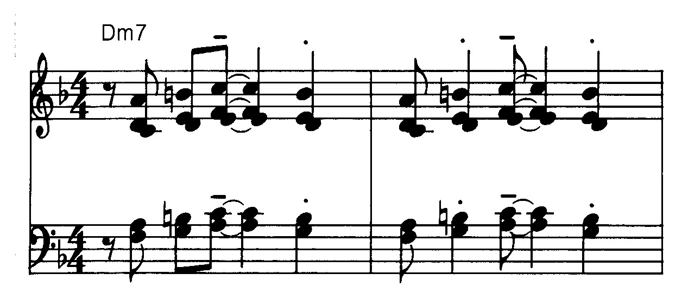
Measures 9 and 10 from Example 22 must be simplified in order to work well in such a basic context.
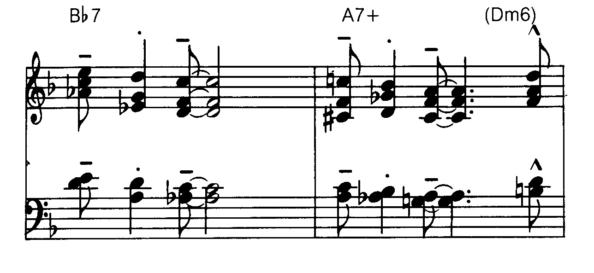
The basic harmonization of Blues for Barry in Example 25 can be revised in the same way.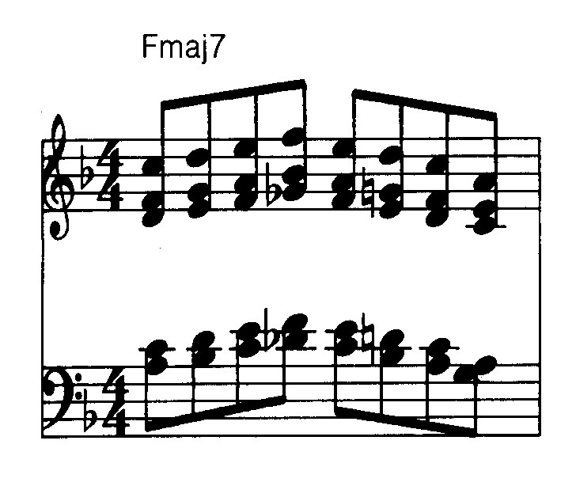
Duke Ellington and Billy Strayhorn used this technic very effectively in close position. Close position sounds strong when there are extensions or altered tones in the melody,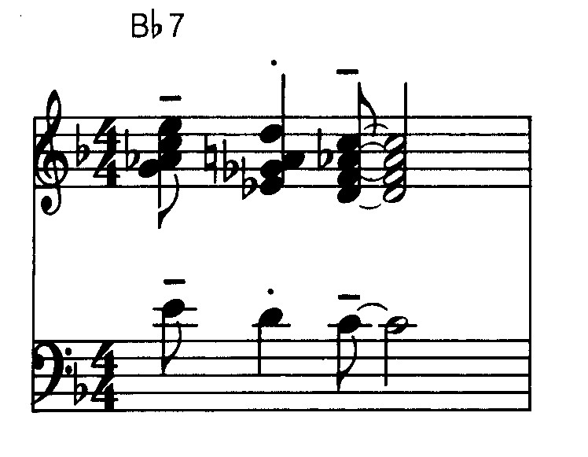
When a melody has many notes, the voicings go by fairly quickly.
Since the main purpose of a basic harmonization is simply to thicken the melodic line, the simple technic shown above can be effective. Sammy Nestico continued to use this method in his many arrangements for Count Basie's orchestra. When the purpose of harmonization is to develop harmonic colors, it is best to write five different lines with no doubling of the melody.
In general, it is more difficult to use independent linear movement with five horns.
There are three technics which sometimes work well. 1 . Parallel movement in the four lowest voices below a melodic pedal point. 2. Contrary motion between the melody and the other four voices. 3. Contrary motion between two middle voices and the other three voices. From time to time more independent movement may be possible. This always depends, of course, on the context which is created by the melody and the harmonic progression. The linear movement should not be too complex. With five horns, the texture is sometimes too thick to hear independent linear movement clearly. It should be used tastefully and with high regard for harmonic clarity and convincing resolution of dissonance.
Example 27 is a harmonization for five horns of Minor D.
The following aspects of the harmonization should be noted.
Measures 1 thru 3: the chromatic parallelism creates tension with the Fm7 add4 voicing in the middle of each measure. The Dm7 add4 voicings on the downbeat of each measure resolve the tension. These voicings come from the pentatonic scale. The first voicing, for example, contains all the notes of the F pentatonic scale.
If the second voice is written an octave lower, these voicings will contain mostly adjacent fourth intervals (like the voicing in measure 6).
Measure 4: there is contrary motion between the melody and the other four voices. The voicings imply Eb7 — D7 (Eb is the tritone of A7).
Measure 5: the independent movement in the two lowest voices on the third and fourth beats helps to avoid doubling the melody. The last voicing in this measure is an effective five part voicing of a dominant seventh chord with the seventh in the melody. It can be difficult to find colorful voicings for dominant chords when either the third or seventh is in the melody.
Since these two notes convey the dominant chord quality, they are most effective in the lower voices with extensions or altered tones above. For four horns, simple 3— 5— 7 — 9 or 3 —5— 7— b9 voicings usually work well. With five horns, however, the thirteenth is too dissonant below the seventh and the ninth is sometimes not very effective below the third.
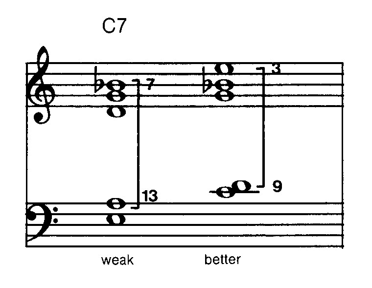
The best solution, as illustrated in measure 5 ofExample 27 is a 1 —3—5— 7 — ♭9 voicing, with the root and flatted ninth creating a half-step dissonance in the middle voices.
Another possibility is to begin with a 3—5— 7 — ♭9 voicing, then add a fifth note from the diminished seventh chord with the same root (D°7 with D7).
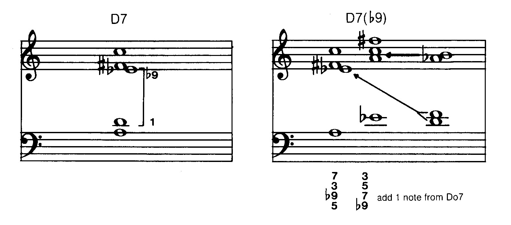
Measure 7: there is chromatic parallelism in the four lowest voices under the melodic pedal point. The voicing on the fourth beat implies Eb7#9 ( Eb is the tritone of A7).
Measure 9: the second voicing implies F13♯9 or B13♯11♯9 (tonicization). The four lowest voices move chromatically while the melody moves diatonically.
Measure 10: the voicings imply B7 — Bb7— A7.
Since the first voicing has the note a in the lowest voice, the bass can simply play one measure of A7.
Measure 11 : The voicings imply B7 —C7— B7 —Bb 7 —A7.
The bass can simply play Dm6— C7 — Bb 7 — A7 (one beat per chord). The Bb 7 on the third beat is the only substitute chord in all the versions of Minor D which has changed a chord root from the original progression. Even here, the bass could actually play e, so that the fifth horn would have the flatted fifth of an E7 chord. Most jazz writers tend to use too many chord substitutions. The many different versions of Minor D show that interesting note choices, voice leading and harmonic embellishment offer more potential for development than chord substitution.
If the basic harmonization technics and the linear approach are used skillfully, the original bass line of a tune can be retained. Then the harmonic variations are clearly related to the original structure of the tune.
If too many chord substitutions are used, the basic structure of the tune is lost.
Since most writers have favorite chord substitutions, all tunes begin to sound harmonically similar. By keeping the original bass line of a tune, however, the writer is forced to develop a more disciplined harmonic approach.
Notice the independent linear movement in the first two beats of measure 11 . There is much harmonic color, yet the basic harmonic movement of Dm — A7 — Dm is still absolutely clear. This is the essence of a linear approach to harmony: to color the original progression instead of substituting a different progression.
Example 28 is a homophonic arrangement for five horns of Blues for Barry.
Notice that, in measures 7 thru 10, the fifth voice continues to state the roots of the chords (unlike earlier versions of this tune). This is because the melody emphasizes extensions of the chords: the thirteenth of the dominant chords and the eleventh of the minor chords.
Since the extensions are stated in the melody, there is no need to double them underneath. The accompaniment sounds very strong with the fifth voice in a fairly low register throughout. This strong sonority compliments the bebop style. No chord substitutions are used in this version. In measure 4, however, F7 is approached by C7 on the third beat (tonicization).
Example 29 is a harmonization for five horns of Blues for Barry.
The following aspects of the harmonization should be noted.
Measure 1 : the voicings on the second and third beats imply Gb9, the tritone of C7 (tonicization).
Measure 2: the four lowest voices descend chromatically, independently from the melody. The voicing on the fourth beat is an effective voicing of A7 with the seventh in the melody.
Measure 4: the four lowest voices approach the second beat by contrary motion to the melody.
Measure 5: F7 continues as F7 b9 or A°7 for the first two beats. The B♭ chord occurs on the third beat.
Measure 6: 1 —3—5— 7 —b9 sounds inappropriate in this context. A dominant thirteenth voicing with the melody doubled is the best solution. This makes the descending II—V sequence clear (Bb m7 — Eb7, Am7 — D7, etc.). In measure 6 of Example 25 a simple 1 —3— 5— 7 voicing was used for the same reason, although 1 —3— #5 — 7 would not be entirely inappropriate.
Measure 10: the last two voicings imply G9 — C7+ (tonicization). Only measures 2, 4, 6 and 10 use a somewhat linear approach. The most important thing is to clearly state the harmonic progression while giving each horn a smooth line. A complex melody does not usually permit much linear independence with five or more lines. There is, however, more linear independence in Example 29 than in example 25. Many pentatonic voicings are used in Example 29. They should be noted for future reference.
All examples in this chapter should be thoroughly analyzed, in order to fully understand the technics of harmonization. The final chapter is a study of form and development. Only formal and motivic analysis is included. The student should thoroughly analyze the voicings and harmonization technics used in the arrangements in Chapter Seven. Careful attention should also be given to the use of the rhythm section in these complete arrangements. Many of the recordings listed below are for big band. They were included because of the exceptional sax section writing (usually five saxes, sometimes with clarinet or soprano lead) or because of the interesting contrapuntal or linear writing. The student should attempt to transcribe excerpts from these recordings. The transcriptions should be analyzed for further study.
Discography — original page 82
The most commonly used form in jazz composing and arranging is the repeated chorus, or strophic form. Once the initial theme has been stated, each subsequent section (or chorus) repeats the same basic form. This approach has both advantages and disadvantages. The main advantage is that, once the initial chorus form is clearly established, harmonic variations and the displacement of thematic motives from one place in the chorus to another can be easily recognized and appreciated by an attentive listener. The main disadvantage is that the length of the chorus and of the individual phrases within it becomes completely predictable. In the arrangements which are included in this chapter,
I have tried to illustrate some effective devices for maintaining musical interest within the repeated chorus form as well as some basic devices for stretching this form or even abandoning it altogether. While the repeated chorus form is convenient for small group improvising, giving the musicians a clear frame of reference, the arranger-composer can use the medium of notation to develop the music in a less predictable manner. The arrangements presented here also illustrate different approaches to basic technical problems such as writing introductions, endings, and backgrounds for solos. Underlying all these considerations, however, is a concern for balance between unity and variety, tension and resolution, motion and stasis. In each arrangement every bit of musical material is related to the initial theme, whether rhythmically, melodically or harmonically. The motivic content of the theme, however, should be developed in ways which do not seem too predictable or redundant. Balance is the most important consideration. Too much predictability results in boredom, while too much unpredictability results in chaos.
Measures 1 thru 12 : there is no introduction. The opening statement of the theme by solo piano, however, gives the feeling of an introduction. The harmonization of the theme uses simple triads above a fourth voice which is in another key. The resulting dissonance is like the minor tonality equivalent of "blue notes". The most common blue notes in major keys are the flatted third and flatted seventh, which are played above chords containing major thirds and sevenths (f played above a D major chord, for example). In minor keys, however, the third and seventh are already flatted. The linear treatment of the theme in measures 1 thru 12 creates a mood that is haunting, mournful and bluesy.
Measures 13 thru 24: the second statement of the theme is exactly like Example 5 in Chapter Two.
Measures 25 thru 36: a second theme has been developed from the last two notes of the first theme (f and d). These notes are used in a simple two-bar riff. In measures 33 and 34 the melody recalls the notes c and a from the beginning of the first theme. The use of the blues scale in measure 35 recalls the use of the blues scale in the eleventh measure of the first theme. The return of the same note or group of notes, in the same register in which they were originally heard, gives the music a feeling of unity and continuity, even if on a subconscious level. Of course, these relationships become increasingly clear with repeated listening.
Measures 37 thru 48 : the backgrounds for the trombone solo are based on a variation of the first measure of the first theme: c-b♮-a becomes c-b♭-a. The rhythm is a variation of the rhythm in the third and fourth measures of the first theme: becomes . In measure 40 the melody continues down from c-b♭-a to a♭-g and, in measure 42, to f-e. The ascending half-steps in the melody from measures 45 thru 48 develop the half-step in the fourth measure of the first theme (a-b♭). In measure 48 the two notes f and d lead to a climactic statement of the ascending half-step motive in measure 49 (g♯-a). This adds intensity to the second chorus of the trombone solo.
Measures 61 thru 72: the tenor solo begins with only bass accompaniment. This allows the solo to build throughout the two choruses, and provides an effective dynamic contrast. Piano and drums enter together at the end of measure 68, and the remaining horns add further intensity at measure 73.
Measures 73 thru 76: the horn backgrounds further develop the ascending half-step motive, ending with still another return to the notes f and d.
Measures 85 thru 96: the entire background for the bass solo is developed from the f-d and half-step motives. The opening rhythm in the horns comes from the second measure of the second theme (measure 26) and the opening piano rhythm comes from the second measure of the first theme (measure 2).
Measures 97 thru 108: this version of the first theme is simply an orchestration of the opening piano statement (measures 1 thru 8). The theme is completed by the rhythm section in measures 105 thru 108. This effectively changes the orchestration, while also allowing the soprano sax player to change to tenor sax.
Measures 109 thru 120 : this version of the first theme is nearly the same as Example 23 in Chapter Five.
Coda: the melody notes in the first two measures are the same as those in measures 33 and 34, but are used in the opposite order. The ascending melody (a to c) builds toward the final phrase of the piece. The final cadence is deceptive, ending on the IV chord (G7). The overall formal design of the arrangement is shown below.
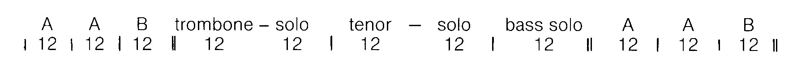
The large sections of the piece, exposition, solos, recapitulation, become gradually shorter 36 measures, 24 measures, 24 measures, 12 measures, 36 measures. The exposition and recapitulation each have their own underlying process of development.During the exposition, the orchestration becomes gradually thicker : solo piano, then trombone, bass and drums, then full ensemble (without piano).
During the recapitulation the orchestration becomes gradually lower in register: high (measure 97), medium (measure 108), then low (measure 25 in the D.S.). The sudden ascension during the last four measures of the piece is, therefore, very dramatic. The trombone and tenor solo sections are each orchestrated to reach a climactic point just after the halfway point. This should help the soloists to pace their solos effectively.
Although the overall form of Minor D is rather simple, these underlying patterns of organization help to give it a feeling of logical but dramatically satisfying development.
Measures 1 thru 8: this 8-bar introduction is developed from the rhythm and melodic shape in measures 13 and 14 (the fifth and sixth measures of the theme). The opening motive of the introduction is sequenced in ascending minor third intervals. The harmonic progression modulates to Db major and B major before ending with the progression Gm7 — C7 (II — V leading to the key of F major at measure 9).
Measures 9 thru 20: this version of the theme is exactly the same as Example 9 in Chapter Two.
Measures 21 thru 32: this version of the theme is exactly the same as Example 29 in Chapter Six.
Measures 33 thru 36: this background is developed from the fifth measure of the theme (measure 13). The leap in measure 34 recalls the leap in the fourth measure of the theme (measure 12). The notes g♯ and a in measure 35 recall the last two notes of the theme. The final high f in measure 36 is the highest note of the theme.
Measures 45 thru 48: measures 46 and 47 recall the 3/4 cross-rhythm from the second and third measures of the theme (measures 10 and 11).
Measures 57 thru 60: the lead voice in the trumpet is a chromatic variation of the lead voice in measures 45 thru 48.
Measures 69 thru 72: the first four notes of the theme are used in a 3/4 cross-rhythm just like the one in the second and third measures of the theme.
Measures 81 thru 86: the rhythm , used throughout this section, occurs between the end of the first statement of the theme and the beginning of the second (measures 20—21). The closing rhythm of this section is a variation of the rhythm used at the end of the introduction (measure 9) and at the end of the theme (measure 20).
Measures 93 thru 99: this melodic pedal point uses a rhythmic cliché developed by the Miles Davis quintet with drummer Philly Jo Jones.
Measures 106 thru 117: this version of the theme is nearly the same as Example 8 in Chapter Two.
Measures 118 thru 125: the introduction is used as an ending. The long note in measure 124 is an octave higher than the corresponding note in measure 7. This creates more tension before the ending of the piece.
Measures 128 thru 130: the first four notes of the theme are followed by a tense dissonance (a variation of Fomaj7), which resolves to a tonic Lydian chord (Fmaj7♯11). The overall form of this arrangement is an arch.
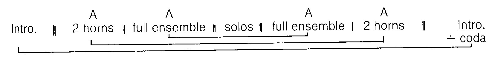
Notice that each of the backgrounds is four measures long.
During the drum solo, however, this is extended to six measures (measure 81 ) and, finally, to seven measures (measure 93). This creates a more expansive feeling just before the return of the theme. The three different versions of the single theme, in addition to the arch form, help to sustain interest throughout the arrangement.
Editorial note: The original reference to measure 9 at the end of the introduction should read measure 7, as corrected in the French edition.
This arrangement of a very old popular song by the American composer Stephen Foster is a study in the use of pedal point. The simple chords from the original song are given in parentheses, so that the harmonic decoration of these chords may be analyzed.
Notice that the original chords are usually stated quite clearly at least once during each phrase. These basic chord symbols may be transposed to the key of E major, and written into the final chorus of the arrangement (measure 55). This will be useful for the analysis of the harmonic decoration in this chorus. The use of long pedal point sections in the arrangement create harmonic tension. When the bass changes to a line which states the roots of the chords, the effect is quite dramatic.
There are two large-scale structural forms in this arrangement. One is the change of keys, by descending major third intervals, at the end of each chorus (C major to Ab major to E major). The other is a gradual shift in emphasis from solo piano to the horn section.
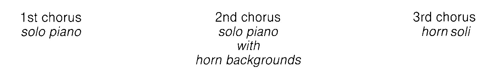
This extended composition is dedicated to Billy Strayhorn, whose nickname was " Swee' Pea". The entire composition developed from a single tune, Swee' Pea's Samba, which is the theme of part III. The vamp from this tune (measure 9 of part III) is based on the opening sounds of a famous Strayhorn composition, Chelsea Bridge. The beginning of the theme of Swee' Pea's Samba is a reharmonization of the first two notes of the vamp (a♮—b♭).
A kind of backwards development was used in this suite. The motives from the theme of part III were used to compose parts I and II. In this way, part III is a summation of everything which is heard in the first two parts. It unites all the earlier motivic ideas into a simple 32-bar theme.
Because of this, I chose to emphasize only one or two motives in each of the various sections which make up parts I and II.
Example 30 is a motivic analysis of the melody of Swee' Pea's Samba, showing the particular motives which are used in many varied forms throughout the entire suite.
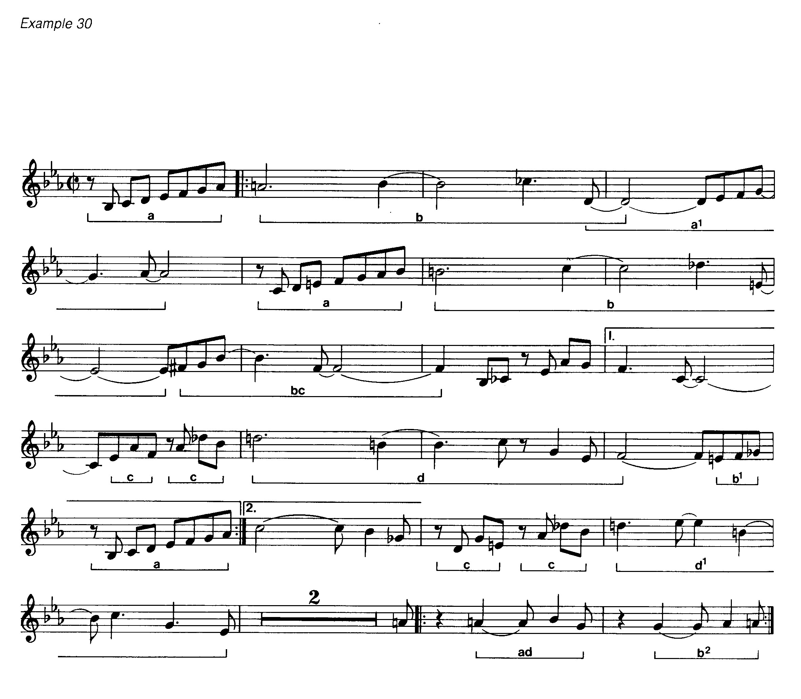
The suite begins with a long 35-measure introduction which introduces the most important motives in a rather abstract, non-thematic context. The introduction also serves to introduce the individual instruments of the ensemble.
Measures 1 thru 21 : this section is developed entirely from motive b1, which consists of two ascending half-steps. The inversion, two descending half-steps, is sometimes used for contrast. The opening uses this motive in imitation, and a1so features the soprano sax in a solo role. The solo soprano is used later for the second statement of the theme (measure 48).
Measures 22 thru 27: the horn section states a harmonization of motive c in measure 22.
The piano answers, in measures 24 and 25, with a variation of motive bc. The horn section continues, in measure 26, with a combination of motive a and an inversion of motive c.
Measures 28 thru 35: the ascending scale, an extension of motive a, leads to a series of ascending half-steps (the first part of motive b). This climactic point concludes the introduction on Bb 7, the dominant in the key of Eb. The dominant pedal point, which begins at measure 21 , helps to build tension throughout this part of the introduction.
Measures 36 thru 47: the main theme of part I is a 12-bar blues. The first phrase consists of motives d and c. This is followed, in measures 38 thru 41 , with motives a, b and a1 . Motive a1 is developed in a sequence in measures 42 and 43. This is followed by motive a and the ascending half-step from motive b. The last two measures (46 and 47) consist entirely of motive d1 . Many of these motives contain exactly the same pitches as their counterparts in the melody of Swee' Pea's Samba, even though the rhythms are often different. This was done intentionally, in order to emphasize the sound of these particular series of pitches in the aural memory of the listener. A diagram of the motivic structure of this theme may be compared to that of Swee' Pea's Samba.
Notice that motive d (or d 1) is used only at the beginning and at the end of this theme, implying an arch form.
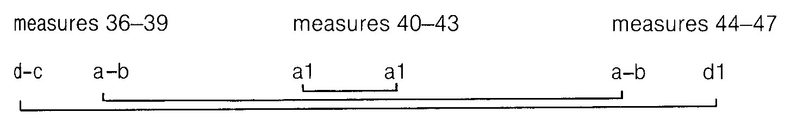
Measures 48 thru 59: the theme is restated, featuring the soprano sax.
There are some subtle variations in the lines of the harmonic accompaniment. These should be compared with the original harmonization in measures 36 thru 47:
Notice that the last two measures (58 and 59) state a variation of motive d1 .
Since this variation is in a higher register, it adds intensity just before the improvised solos begin.
Measures 60 thru 107: the solos begin with one chorus based on the harmonic progression of the theme. This is followed by one chorus based on a much more basic blues progression. This alternation of different progressions provides an element of contrast and unpredictability. It serves a purpose similar to that of the second theme in Minor D. The backgrounds at measures 72 and 96 are developed mostly from motive c. The end of motive b is also used in measures 79 and 80. These backgrounds end with a quote from George Gershwin's I've Got Rhythm (measures 82 and 83).
Measures 108 thru 119: the backgrounds for the bass solo emphasize the pitches e♭-b♮-c, which come from motive d1 .
Measures 117 and 118 also recall motive d1 , emphasizing the notes d-e♭-c-g.
Measures 120 thru 131 : these backgrounds are based on motives bc and b.
The piano prepares the ensemble chorus, in measure 131 , with a variation of measure 24 from the introduction.
Measures 132 thru 139: the ensemble chorus begins with an inversion of the opening of the theme (measures 36 and 37). This is followed, in measures 134 and 135, with a variation of motives d and b1 . In measures 136 thru 139 the piano develops the ascending half-steps from motive b.
Measures 140 thru 147: The horn section states two variations of motive d1 .
The piano ends this section with a reference to a classic Duke Ellington composition, Ko Ko. This section departs from the repeated 12-bar chorus form by using an 8-bar dominant pedal point in place of the last four measures of the blues chorus. This extends the section to sixteen measures, and builds tension just before the return of the theme.
Coda: the end of the theme is varied. The shape of the melody is changed, while the rhythm remains the same. The harmonic alteration in the fourth measure of the coda strongly suggests measure 29 in the theme of Swee' Pea's Samba (measure 29 in part III).
Measure 6 of the coda uses motive a with contrary motion in the baritone sax. This is a variation of the contrary motion used earlier in measure 50. Part I ends with a sequence of ascending half-steps which are stated in a 3/4 cross-rhythm. This concludes with a statement of motive c by the flugel horn, followed by a cadence on G7. This prepares the key of C minor, the relative minor key of Eb major. The pickup notes in the alto sax establish motive b or bl , the main motive which is developed in part II.
The theme of this part has a long AABA form of 64 measures, with 16 measures in each section. A subtle reharmonization technic is used in the A sections. The melody in measures 9 thru 11 is accompanied by altered minor chords which suggest the sound of the vamp in Swee' Pea's Samba. When this melody returns, in measures 25 thru 27 and 57 thru 59, it is accompanied by major chords based on the same roots. The melody in measures 1 thru 8 and 17 thru 24 is in the keys of C minor and A minor. In the last A section, measures 49 thru 56, the parallel major keys are used instead. This gradual shift from minor to major was quite intentional. The title of this movement came from the eulogy which Duke Ellington delivered at Strayhorn's funeral. I wanted this movement to convey the sadness of Strayhorn's death, combined with my gratitude for the beautiful music he left with us. This is why the piece begins rather mournfully, while ending on a warm and positive note. The melody of the A sections consists almost entirely of the chromatic motive b, beginning with the same pitches which are used in Swee' Pea's Samba. The inversion is sometimes used for contrast (measures 9 thru 12, 25 thur 28 and 57 thru 60). The B section (measures 33 thru 48) is based on motive a and the beginning of motive b. The diatonic scales in the melody of the B section provide an effective contrast to the chromaticism of the A sections. The pedal points in the B section also provide harmonic contrast to the A sections, which are more harmonically active.
After the alto solo (measures 65 thru 96), the B section is restated with a different orchestration. In measures 97 thru 104 the melody is in the lowest voice, the baritone sax. The last 8 measures of this section are stated by the piano, again with some subtle harmonic variations.
Notice that, in spite of these harmonic variations, the basic progression is still the same as in the original B section (measures 33 thru 48). The final G7 chord is extended from one measure to five measures (measures 112 thru 116). This extension creates harmonic tension just before the final A section. The final A section (measure 117) contains further harmonic variations, while retaining the same bass line as the other A sections. The end of this movement leads, sequentially, to E6,9♯11 at the beginning of part III. This is the tritone of Bb 7, the dominant in the key of Eb major.
At the beginning of this section, the drums establish the samba rhythm. The vamp begins in measure 9, followed by the theme in measure 17. The theme of this part has a basic ABAB1 form of 32 measures.
The second eight measures and the last eight measures are similar, but different. In the orchestration, the full ensemble alternates with trumpet and alto playing in unison.
During the improvised solos (measures 49 thru 120) the vamp is used as an interlude between the solos. The simple horn backgrounds recall the 3/4 cross-rhythm of the theme. The vamp returns at measure 121 to introduce an ensemble chorus at measure 129. This chorus begins with the pickup notes from the theme (motive a). The first four notes in measure 129 decorate the first two notes of the theme (a♮—b♭). This melodic decoration is then developed for 8 measures, mostly through sequence.
Notice the use of 3/4 and 5/8 cross-rhythms.
At measure 137 the original melodic shape from measure 129 is inverted to b♭-g-a♭. This variation, along with the rhythm , is developed for 8 measures. The gradual shift from unison to five part writing is very effective for contrast, and also builds intensity.
Measure 144 is a variation of the opening pickup notes of the theme. The motivic shape from measure 129 (a♮-c-b♭) returns in measure 147 (d-f-e♭), and is developed with a 6/4 cross rhythm in measures 149 thru 152. The motive from the first measure of the second ending of the theme (c-b♭-g♭) is developed in measures 153 thru 155 (f-e♭-c). The ensemble chorus ends with motive b1 , stated in a 3/4 cross-rhythm, and a descending figure based on motive c. The final phrase returns to the opening chord of the vamp (Eb7#11).
At measure 161 a new vamp is introduced which is based on the chord roots of the original vamp (e♭ and d♭). The new vamp changes to a mambo feeling.
The bass line emphasizes beat 4 instead of beat 1 .
The piano and horn vamps are based loosely on motives b, b1 and bc. This section reaches a climax on E13♯11 (the tritone of Bb7) in measure 183.
The piano then begins the restatement of the theme. This gives the horns a short rest before the final section of the piece, and also provides an effective change of orchestration.
Coda: the coda uses two basic ending devices — a tag and a pedal point. In a tag, the final phrase of a tune is interrupted on the dominant chord, before the final cadence on the tonic chord. The same melodic phrase, or a similar phrase, is then stated with some harmonic variation of III—VI (G7—C7 in this case). Finally the original ending phrase is repeated, continuing to II, V and I. In this piece, however, the tension is sustained further through the use of a dominant pedal point (actually II-V: f-b♭). The melodic fragment from the tag at the beginning of the coda (d-e♭-b♮-c) is then developed in stretto at the tritone with a 3/8 or 3/4 cross-rhythm (measure 9 of the coda). This builds to a climactic cadence on III—VI (Eb/G — C7), which is followed by a short drum solo. Finally, the tension is resolved by the final statement of the tag and a typical latin ending. The doubling of the half-step dissonances in the final chord adds some intensity to the ending. The extended mambo section and coda in the third movement balance the extended introduction in the first movement. Without a closing development section the suite would end too abruptly, and the creative potential established in the first movement would not be fully realized. Once again, the general concept of balance is of fundamental importance.
The following ideas may be helpful in thinking about form and development. 1 . Begin with a plan, no matter how basic. The plan may be altered as the work progresses, but it will help to stimulate creative thinking in the early stages of work.
2. Work on any part of the piece which is of interest at the moment. Take advantage of spontaneous interest to achieve positive results.
3. Write much more than that which is actually needed for the piece.
If you find ten good solutions for every compositional or harmonic problem, the solution you finally choose will probably be imaginative and musically convincing. The solutions you discard will always be of help in future pieces.
4. Try to allow the music to develop in a way in which everything is related to the opening musical ideas. Try to develop these ideas, however, in a way which does not become either too predictable or too technically self-conscious.
5. Try not to overwrite, either in relation to the number of notes or the length of the piece. A short clear piece is preferable to a long vague piece. Don't use all the instruments all the time.
6. Use the listed recordings in the discographies of this book to find the kinds of pieces you are most interested in writing. The works on these recordings can serve as excellent models for study of form, development, melody harmonization and orchestration.
The scores in this chapter should be analyzed in relation to melody harmonization technics and voice leading. Of course, motivic and formal analysis may continue far beyond the general level which is possible within the scope of this book. The analysis of the harmonization technics and voice leading used in the pieces in this chapter will help the student to more fully assimilate these technics and concepts.
In concluding this book I must emphasize the fact that clever motivic development and compositional technic do not necessarily result in music which is interesting and rewarding to listen to. It is, indeed, a risky thing to attempt to teach anything about musical creativity. The sole reason for my attempting such a task is that serious composition in a jazz idiom remains a relatively unexplored field.
Although there are many good tune writers, the list of jazz composers who work convincingly in extended forms which are structurally unified has not changed much since the early 1960's: Duke Ellington, Billy Strayhorn, Bill Holman, Bill Russo, George Russell, John Lewis, John Carisi, Gerry Mulligan, Bob Brookmeyer, Gary McFarland, Gil Evans, Carla Bley and Clare Fischer. This may be partly due to the extremely commercial nature of the music business at the present time.
It is probably also a result of the emphasis on informally structured small combos, due to difficult economic conditions. However, I feel it is also due to a general ignorance, on the part of aspiring young composers and arrangers, of the work of those composers whose names are listed above.
Any aspiring jazz writer should be thoroughly familiar with the work of great jazz composers, just as any aspiring symphonic writer should be thoroughly familiar with the work of Debussy, Ravel, Messiaen, Scriabin, Hindemith, Schoenberg, Berg, Webern, Prokofiev, Shostakovitch, Stravinsky and Bartok, not to mention dozens of other composers who belong to the rich tradition of European music since the seventeenth century.
Although the vocabularies of polytonal and atonal music could be the topic of another entire book, a thorough understanding and assimilation of more conventional harmony and counterpoint is necessary in order to provide a solid foundation and a sound musical perspective.
It is my hope that the musical examples in this book and the extensive discographies included here will serve as a starting point toward discovering the creative heritage which has been left to us by the great jazz composers and arrangers.
It is through the further exploration of their works, and not by the canonization of compositional rules and systems, that jazz writing will continue to flourish and develop
Instrument ranges and transpositions
Parentheses indicate the practical range, especially for small group writing.
If strong voicings are used, a powerful sound can be achieved without exceeding the practical ranges.
Scoop Begin below the given pitch.
Scoop up to the given pitch. The scoop is usually rather quick, but sometimes takes longer at slower tempos or in blues pieces.
Fall Off Begin on the given pitch. Let the pitch descend rapidly. The fall off usually lasts about two beats, but longer fall offs are often effective at slow tempos or in blues pieces.
The second fall off below is usually played as a fingered glissando. In the first type, the individual descending pitches are not discernable. Articulation marks: tenuto, staccato and accents Tenuto: full value (implies a slight accent). Staccato: short, detached. Accent: full value. Accent: short, detached.
1 . Try to line up the beats of each measure in each instrumental line of the score, so that it is easy to see whether the instruments are playing in rhythmic unison or in a rhythmically independent manner.
2. Do not use repeats within repeats.
If there is a large repeated phrase which contains short repeated phrases within it, the short phrases must be written out. Otherwise, the meaning will be unclear.
3. Do not use more than one coda in the same piece or movement of a suite. This also is quite confusing for the players. In some cases the timesaving devices given below will be of help, although some of them cannot be used in the instrumental parts.
4.
The following signs may be used as abbreviations if the music in one bar, or two consecutive bars is repeated. It should not be used for units longer than two measures. In these cases conventional repeat signs are more practical.
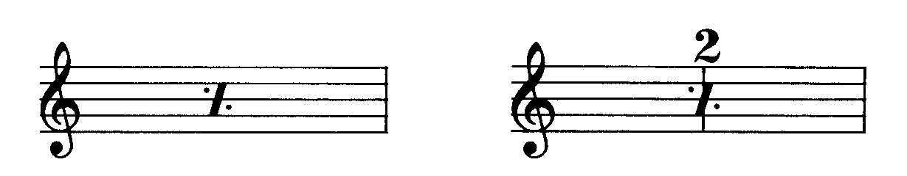
These abbreviations may be used in both the score and the parts.5. When two or more instruments play in unison or octave unison, the term »col« (col trumpet, for example) may be used instead of writing out all the notes in all the unison lines. See the score excerpts in the next section for clarification of this convention. This timesaving device can only be used in the score.
6.
If there are one or more measures in the score which exactly repeat previous measures, you may simply write »Copy
Measure 1«, etc., indicating the number of the measure or measures which are being recapitulated.
Notice the following score excerpt for clarification of this practice. This practice can only be used in the score.
Fully transposed score excerpt from Blues for Barry (measures 115–118)
Discography — original page 151
Supplement from the French edition, translated into English. The original French glossary was compiled by Jean-Louis Billoud; these definitions include the terminology clarifications made for this edition.
Musical accompaniments behind the main line. They can give the soloist reference points, establish the atmosphere, attract the listener’s attention, add interest to an arrangement and connect its sections. Repetitive, strongly rhythmic backgrounds are called riffs.
A jazz style associated with Charlie Parker and Dizzy Gillespie, and a major movement in the history of jazz.
One complete cycle of a piece’s form and harmonic progression, played during the statement of the theme, a solo or an arranged passage. It often lasts 12 measures in a blues or 32 in an AABA form, but other lengths are possible. In this book, it does not simply mean the refrain of a song.
A close-position voicing fits within one octave.
A group of notes whose intervals are mainly major and minor seconds. These chords have a strongly dissonant sound.
The impression of a tempo twice as fast. The drums do not necessarily play at twice the tempo; they may merely suggest it. The same applies to the bass.
In 4/4, the bass mainly plays half notes on beats one and three, with occasional embellishments. The pulse is felt in two, without halving the tempo or the duration of the measures.
A collection of tunes presented as melodies and chord symbols, used especially for improvisation. Real Books are examples. The accuracy of the chords depends on the edition.
Giving a musician a prominent or solo role.
‘With feeling’: playing with soul and warmth, expressing emotion. ‘To give the feeling of’: to create an impression. ‘Swing feel’: conveying a sense of swing.
Drummers fill less active measures with familiar rhythmic figures or figures of their own invention.
Often used as a tempo indication in this context: an easy, relaxed medium swing that feels comfortable and swings well.
Playing with a sense of freedom in relation to the bar line. The bass part becomes irregular and unpredictable.
An open-position voicing spans more than an octave. Lowering the second voice of a close-position voicing by one octave, known as drop 2, is one way to obtain it.
The conductor’s full score, written by the arranger or composer. It may be in concert pitch or transposed.
Connecting successive notes in each voice smoothly, often by small intervals and without awkward movements. Each part retains a line that is easy to hear and play.
A three-note chord that may be major, minor, diminished or augmented.
A repeated melodic, harmonic or rhythmic figure, used to establish a piece’s character or atmosphere, or as an introduction.
The precise choice and arrangement of a chord’s notes among different voices and registers. The same chord symbol may give rise to several voicings. This differs from harmonization, which concerns the chords associated with a melody and their progression.
The bassist plays one quarter note per beat in 4/4, with occasional rhythmic figures. Ron Carter is one of the masters of walking bass.
{kind=link}
{kind=link}
{kind=link}
{kind=link}
{kind=link}
{kind=link}
{kind=link}
{kind=link}
{kind=link}
{kind=link}
{kind=link}
{kind=link}
{kind=link}
{kind=link}
{kind=link}
{kind=link}
{kind=link}
{kind=link}
{kind=link}
{kind=link}
{kind=link}
{kind=link}
{kind=link}
{kind=link}
{kind=link}
{kind=link}
{kind=link}
{kind=link}
{kind=link}
{kind=link}
{kind=link}